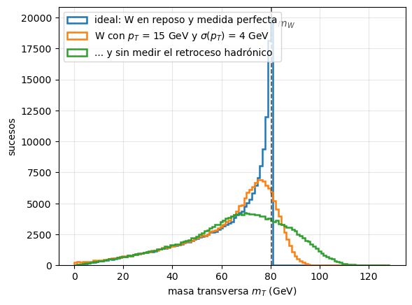
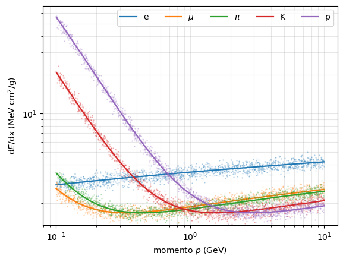
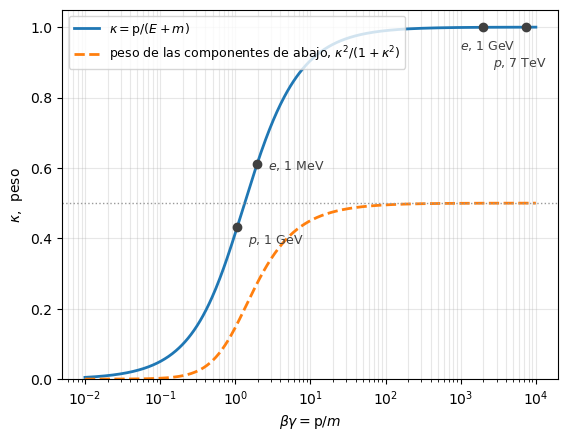

2. Perspectivas: experimental y teórica#
# Configuración: el código auxiliar está en el paquete notebooks/fnyp/
try:
import fnyp
except ModuleNotFoundError: # en Google Colab hay que traerse antes el repositorio
!git clone -q https://github.com/jahernando/USC-FNyP.git
import sys; sys.path.append('USC-FNyP/notebooks')
from fnyp.inicio import *
Last version Thu Sep 24 13:25:32 2026
2.1. Objetivos#
En el tema anterior vimos qué se mide: la sección eficaz, la vida media, el invariante \(s\), la fracción de desintegración. Este tema mira el mismo campo desde los dos lados en que se trabaja:
La perspectiva experimental: cómo se convierte una partícula en cuadrimomentos.
Cómo se producen las partículas que se estudian: los aceleradores.
Cómo interaccionan con la materia, que es lo único que permite detectarlas.
Qué firma deja cada una y con qué detectores se recoge.
Qué le ocurre al dato desde el sensor hasta la figura de un artículo.
La perspectiva teórica: cómo se calcula ese mismo número.
El corazón de la teoría es el cálculo del elemento de matriz.
¿Cómo se describen los fermiones libres? La ecuación de Dirac.
¿De dónde sale la interacción? La simetría gauge.
La interacción de contacto de cuatro fermiones: la teoría de Fermi.
Los diagramas de Feynman.
Se trata de una aproximación, de intentar comprender los elementos fundamentales sin entrar en el detalle del cálculo.
2.2. Una perspectiva experimental#
Un experimento de partículas es una cadena: una máquina produce las partículas, estas dejan energía en un material, unos sensores recogen esa energía y un análisis la convierte en un resultado.
A partir de esos depósitos reconstruimos, dependiendo del caso, la trayectoria, el momento, la identidad de la partícula, y luego a partir de ellos la sección eficaz o la vida media o la fracción de desintegración.
La cadena tiene cuatro eslabones, y los vamos a recorrer por su orden:
el acelerador produce las partículas |
¿de dónde salen, y con qué energía? |
la partícula interacciona con la materia |
¿cuánta energía deja, y de qué forma? |
el detector recoge esa señal |
¿qué señal deja cada partícula? |
el análisis convierte sucesos en observables |
¿cómo se pasa de señales a estimar un valor con su error? |
2.2.1. Aceleradores#
¿De dónde salen las partículas que chocan?
En un acelerador solo se pueden acelerar partículas cargadas y estables: \(p\), \(\bar{p}\), \(e\), \(e^+\) e iones. Se agrupan en paquetes (bunches) de \(\mathcal{O}(10^{11})\) partículas que circulan por un tubo en ultra-alto vacío, y sobre ellos actúan tres sistemas:
cavidades de radiofrecuencia, que aceleran con gradientes de potencial sincronizados con el paso del paquete;
imanes dipolares, que curvan la trayectoria para mantenerla en la órbita;
imanes cuadripolares, que enfocan el haz, porque los paquetes tienden a dispersarse.
Y hay dos familias: lineales, que el paquete recorre una sola vez, y circulares, donde da \(\mathcal{O}(10^5)\) vueltas ganando energía en cada una.
2.2.1.1. Aceleradores lineales#

El linac de SLAC (California), de \(3\) km, aceleró electrones hasta \(50\) GeV; con él se midió la sección eficaz de Mott (nuclear) y se descubrió la estructura de partones del protón.
Los aceleradores lineales son además el primer eslabón de cualquier complejo de aceleradores, y la técnica de todos los aceleradores médicos.
2.2.1.2. Aceleradores circulares#
|
|
el complejo de aceleradores del CERN [>] |
vista aérea del LHC [CERN] |

La energía que alcanza un anillo la fija un campo magnético perpendicular y el radio que se puede excavar, según la relación del electromagnetismo:
Es la misma fórmula con la que mediremos el momento de una traza dentro de un detector: la física es idéntica, y solo cambia quién es el dato y quién la incógnita.
Con imanes convencionales el hierro satura en \(\sim 2\) T: para subir hay que ir a imanes superconductores. El Tevatron fue el primer gran anillo superconductor: \(\rho \simeq 0.75\) km y \(B \simeq 4.2\) T daban \(\simeq 1\) TeV. Los dipolos del LHC operan a \(8.3\) T y a una temperatura de \(1.9\) K, más fríos que el espacio exterior.
2.2.1.2.1. El límite: la radiación de sincrotrón#
Una carga acelerada radia, y una partícula que gira está acelerada. La energía radiada por vuelta es
y ese \(m^4\) en el denominador es el hecho central de la física de aceleradores: un electrón radia \((m_p/m_e)^4 \approx 10^{13}\) veces más que un protón de la misma energía.
Por eso los récords de energía son siempre de máquinas de protones, y por eso LEP —\(e^+e\) en el mismo túnel de \(27\) km que hoy ocupa el LHC— se quedó en \(104\) GeV por haz mientras que el LHC llega a \(7\) TeV. Por eso también, si se quiere un colisionador \(e^+e\) de alta energía, o se hace lineal (ILC, CLIC) o se hace un anillo mucho mayor (FCC-ee, \(91\) km).
[>] Taller — LEP frente a LHC: el precio de girar
Para electrones, la energía radiada por vuelta es, en la práctica,
y para otra partícula hay que multiplicar por \((m_e/m)^4\).
¿Cuánta energía pierde por vuelta un electrón de LEP-II (\(E = 100\) GeV, \(\rho = 3096\) m)? ¿Qué fracción de su energía es?
¿Y un protón del LHC (\(E = 7\) TeV, \(\rho = 2804\) m), en el mismo túnel?
LEP daba \(11\,245\) vueltas por segundo. ¿Qué potencia había que reponer con las cavidades para mantener los dos haces, si cada uno lleva \(\sim 10^{12}\) electrones?
¿Qué energía podría alcanzar LEP si se le permitiera radiar \(10\) veces más por vuelta?
# Radiacion de sincrotron por vuelta: DE[keV] = 88.5 E^4[GeV] / rho[m] * (m_e/m)^4
m_e, m_p = 0.511, 938.3 # MeV
def sincrotron(E_GeV, rho_m, m_MeV=m_e):
return 88.5 * E_GeV**4 / rho_m * (m_e / m_MeV)**4 # keV por vuelta
dE_lep = sincrotron(100., 3096.) # LEP-II, electrones
dE_lhc = sincrotron(7000., 2804., m_p) # LHC, protones
print('LEP-II (e, 100 GeV) : {:8.2f} keV/vuelta = {:.2f} GeV'.format(dE_lep, dE_lep*1e-6))
print('LHC (p, 7 TeV): {:8.2f} keV/vuelta'.format(dE_lhc))
print('razon : {:.1e}'.format(dE_lep/dE_lhc))
LEP-II (e, 100 GeV) : 2858527.13 keV/vuelta = 2.86 GeV
LHC (p, 7 TeV): 6.67 keV/vuelta
razon : 4.3e+05
Solución
\(\Delta E = 88.5 \times 10^8 / 3096 = 2.9 \cdot 10^6\) keV \(\approx 2.9\) GeV por vuelta: casi el \(3\,\%\) de su energía, perdida y repuesta \(11\,245\) veces por segundo. LEP era una gigantesca lámpara de rayos X.
\(88.5 \times 7000^4 / 2804 \times (0.511/938.3)^4 \approx 6.7\) keV por vuelta: un factor \(4 \cdot 10^5\) menos, pese a que el protón tiene \(70\) veces más energía.
\(P = \Delta E \times f \times N = 2.9\ \mathrm{GeV} \times 1.12 \cdot 10^4\ \mathrm{s^{-1}} \times 10^{12} \approx 3.3 \cdot 10^{16}\) GeV/s \(\approx 5\) MW por haz, \(\sim 10\) MW en total. Esa fue la pared de LEP: la potencia de radiofrecuencia necesaria crece como \(E^4\), y limitó su energía a \(\sim 104\) GeV por haz. (Se cerró en 2000 para instalar el LHC en su túnel.)
Como \(\Delta E \propto E^4\), un factor \(10\) en la pérdida son \(10^{1/4} = 1.8\) en la energía: apenas \(180\) GeV por haz.
2.2.1.2.2. Anillos de almacenamiento y colisionadores#
Un anillo de almacenamiento mantiene circulando dos haces en sentidos opuestos durante horas. En determinados puntos de colisión, unos imanes comprimen los paquetes y los cruzan, y ahí se instalan los experimentos.
En el LHC los paquetes de \(\sim 10^{11}\) protones miden unos \(40\) cm de largo y \(1\) mm de sección, que en el punto de colisión se aprieta hasta \(\sim 10\ \mu\mathrm{m}\). Se cruzan cada \(25\) ns —\(40\) MHz—, y en cada cruce ocurren decenas de colisiones protón-protón simultáneas (pile-up), de las que solo una suele interesar.
Los parámetros que definen un colisionador son los dos que ya conocemos del tema anterior: la energía \(\sqrt{s}\), que fija qué se puede crear, y la luminosidad \(\mathcal{L}\), que fija cuánto se crea. La relación entre ambos es
donde \(R\) es la razón de producción de interacciones en colisiones. \(\mathcal{L}\) es la luminosidad instantánea, lo que nos indica la capacidad de la máquina para generar interacciones (el equivalente al flujo \(\phi_a\) y número de blancos \(N_b\) en los experimentos de blanco fijo).
La luminosidad se mide en \(\mathrm{cm}^{-2} \mathrm{s}^{-1}\), y la luminosidad integrada \(\mathcal{L}_{int}\) en b\(^{-1}\) (o fb\(^{-1}\)), que es la unidad que aparece en los artículos.
El número de interacciones en un tiempo viene dado por la luminosidad integrada:
colisionador |
laboratorio |
tipo |
periodo |
\(\sqrt{s}\) |
\(\mathcal{L}\) (cm\(^{-2}\)s\(^{-1}\)) |
descubrimientos |
|---|---|---|---|---|---|---|
SPS |
CERN |
\(p + \bar{p}\) |
1981-1991 |
540-630 GeV |
\(10^{30}\) |
\(W^\pm\), \(Z\) |
SLC |
SLAC |
\(e^+ + e\) |
1988-1998 |
91 GeV |
\(10^{30}\) |
(lineal) |
LEP |
CERN |
\(e^+ + e\) |
1989-2000 |
91-209 GeV |
\(10^{32}\) |
\(N_\nu = 3\), precisión del SM |
HERA |
DESY |
\(e + p\) |
1992-2007 |
320 GeV |
\(10^{31}\) |
estructura del nucleón |
PEP-II |
SLAC |
\(e^+ + e\) |
1999-2008 |
10.5 GeV |
\(10^{34}\) |
violación de CP en \(B\) |
Tevatron |
Fermilab |
\(p + \bar{p}\) |
1987-2011 |
1.96 TeV |
\(4 \cdot 10^{32}\) |
quark \(t\) |
LHC |
CERN |
\(p + p\) |
2009- |
7-13.6 TeV |
\(2 \cdot 10^{34}\) |
Higgs |
SuperKEKB |
KEK |
\(e^+ + e\) |
2018- |
10.6 GeV |
\(5 \cdot 10^{34}\) |
(en marcha) |
¿Qué ves? Las máquinas de hadrones ganan en energía —son máquinas de descubrimiento— y las de leptones, en limpieza: la colisión es entre partículas elementales, con \(\sqrt{s}\) conocido, y son máquinas de precisión. Y la luminosidad ha subido cuatro órdenes de magnitud en treinta años.
2.2.1.3. Haces secundarios#
No todo lo que se quiere lanzar contra algo es estable. Los haces de \(\pi\), \(K\), \(\mu\) y \(\nu\) se fabrican en dos pasos: se golpea con un haz primario de protones un blanco fijo, y de los restos se selecciona lo que interesa.
|
esquema de un haz de neutrinos [Fermilab] |
|
el haz de \(\nu\) de Fermilab hacia DUNE (en construcción) [Fermilab] |


La selección la hacen imanes ajustados para dejar pasar solo una carga y un momento determinados. Para un haz de neutrinos se deja además que los piones se desintegren en vuelo, \(\pi^+ \to \mu^+ + \nu_\mu\), en un túnel de desintegración, y después se absorben en roca los muones y todo lo demás: lo único que atraviesa cientos de metros de tierra es el neutrino. Es la técnica de los experimentos de oscilaciones.
2.2.2. ¿Qué llega al detector?#
¿Qué partículas llegan a detectarse?
De las partículas que aparecen en una interacción, solo un puñado vive lo suficiente para recorrer el detector y dejar una firma directa:
Las estables (a la escala del detector): \(p\), \(e\), \(\gamma\), \(\nu\), \(n\).
Las de vida media larga, que recorren \(\mathcal{O}\)(m) o más antes de desintegrarse: \(\mu\), \(K^\pm\), \(K^0_L\), \(\pi^\pm\).
Estas se detectan como trayectorias o como depósitos de energía. Su identidad se deduce de cómo penetran, cuánto ionizan, cuánta luz producen y en qué se desintegran.
Las demás —la inmensa mayoría— no llegan nunca a un sensor. Se detectan de forma indirecta, y de dos maneras según lo que vivan:
Si la partícula vuela \(\mathcal{O}\)(mm–cm) antes de desintegrarse (\(\tau\), hadrones con \(b\) o \(c\), como el \(B^0_s\)), los detectores de trazas (o vértices) precisos reconstruyen su vértice de desintegración, separado del punto de la colisión.
Si su vida es tan corta que se desintegra donde se produjo (\(Z\), \(W\), \(\rho\), \(\Delta\)), solo queda el rastro de sus productos: aparece como una resonancia en la sección eficaz frente a la energía, o como un pico en la masa invariante de lo que sale.
Las dos cosas —el pico del \(Z\) en OPAL, el pico del \(B^0_s\)— ya las vimos en el tema anterior. Ahora vamos a ver de dónde salen los cuadrimomentos con los que se construyen esos picos.
2.2.3. Interacción con la materia#
¿Cómo se ve algo que no podemos alcanzar?
Una partícula solo es visible si deja parte de su energía en el material que atraviesa. Y la deja de tres maneras distintas, según lo que sea:
partículas |
mecanismo dominante |
escala característica |
|---|---|---|
cargadas (\(e\), \(\mu\), \(p\), \(\pi^\pm\), \(K^\pm\)) |
ionización y excitación del medio |
\(\mathrm{d}E/\mathrm{d}x\) |
\(e\) y \(\gamma\) de alta energía |
bremsstrahlung y producción de pares |
longitud de radiación, \(X_0\) |
hadrones |
interacción fuerte con los núcleos |
longitud de interacción, \(\lambda_I\) |
Los tres mecanismos coexisten: un electrón ioniza y radia, un pión ioniza y choca con un núcleo. Lo que cambia es cuál domina, y eso depende de la partícula, de su energía y del material.
2.2.3.1. Las partículas cargadas: ionización#
Una partícula cargada que atraviesa un medio interacciona electromagnéticamente con los electrones de los átomos: los excita o los arranca (ioniza). En cada choque pierde muy poca energía —arrancar un electrón cuesta \(\mathcal{O}(10)\) eV— pero hay muchísimos choques, y el efecto acumulado es una pérdida continua y predecible.
La mayor parte de los detectores de trayectorias se basan en recoger esos electrones de ionización.
La pérdida media de energía por unidad de camino la da la fórmula de Bethe-Bloch (años 30):
donde \(K = 4\pi \hbar^2 \alpha^2 N_A / m_e = 0.307\) MeV cm\(^2\)/mol, \((A, Z)\) caracterizan el material, \(\rho\) es su densidad, \(I\) su potencial medio de ionización, y \(z\) (la carga, en unidades de \(e\)), \(\beta\) y \(\gamma\) son los de la partícula incidente.
Conviene leerla despacio, porque dice tres cosas nada obvias:
no depende de la masa de la partícula incidente, solo de su velocidad \(\beta\) y de su carga. Un \(\pi^\pm\) y un \(p\) con la misma \(\beta\) pierden lo mismo;
va como \(1/\beta^2\): cuanto más despacio, más ioniza;
dividida por la densidad, \(\frac{1}{\rho}\frac{\mathrm{d}E}{\mathrm{d}x}\), es casi la misma para todos los materiales (\(Z/A \simeq 0.5\) salvo en el hidrógeno).
Esto hace que la curva sea prácticamente universal en función de \(\beta\gamma\):
pérdida de energía por ionización [PDG] |
¿Qué ves? La curva tiene tres regiones, y cada una tiene una consecuencia práctica:
\(\beta\gamma \lesssim 1\): la pérdida crece como \(1/\beta^2\). Como la partícula se va frenando, ioniza cada vez más, y el depósito es máximo justo antes de pararse: es el pico de Bragg, en el que se basa la hadronterapia.
\(\beta\gamma \sim 3\)–\(4\): el mínimo. Una partícula ahí se llama MIP (minimum ionizing particle) y pierde \(1\)–\(2\) MeV cm\(^2\)/g (\(\simeq 1.5\) en hierro), casi independientemente del material. En hierro, \(\simeq 11\) MeV/cm. Casi todas las partículas cargadas de un experimento de altas energías están en esta región o por encima.
\(\beta\gamma \gtrsim 100\): la pérdida vuelve a subir, ahora logarítmicamente. Es la subida relativista, y es lo que permite identificar partículas midiendo \(\mathrm{d}E/\mathrm{d}x\).
La distancia que recorre una partícula hasta detenerse es su rango. Se obtiene integrando \(\mathrm{d}E/\mathrm{d}x\) desde su energía inicial hasta cero.
2.2.3.2. Electrones y fotones#
Un electrón, además de ionizar, radia fotones al ser desviado por el campo del núcleo. Es la radiación de frenado o bremsstrahlung:
La sección eficaz se calcula en QED y va como \(\sigma_b \propto E/m^2\): la masa al cuadrado en el denominador es lo decisivo. Un muón radia \((m_e/m_\mu)^2 \approx 1/43000\) veces menos que un electrón, y por eso por debajo de \(\mathcal{O}(100)\) GeV los muones solo ionizan —y por eso atraviesan el detector entero—.
Por encima de una energía crítica \(E_c\) la radiación supera a la ionización:
que vale \(\simeq 22\) MeV en hierro y \(\simeq 7\) MeV en plomo. Por encima de unas pocas decenas de MeV, un electrón en un material denso esencialmente solo radia.
Por encima de \(E_c\) la pérdida es proporcional a la energía, y eso hace que la caída sea exponencial en el camino:
La constante \(X_0\) es la longitud de radiación: la distancia en la que un electrón pierde, en promedio, una fracción \(1 - 1/e\) de su energía. Depende solo del material (\(X_0 = 1/(n\sigma_b)\), con \(n\) la densidad de núcleos) y es la escala con la que se diseñan los calorímetros:
H\(_2\) (gas) |
H\(_2\)O |
C (grafito) |
Xe (líq.) |
Fe |
PbWO\(_4\) |
Pb |
|---|---|---|---|---|---|---|
7 km |
36.1 cm |
18.8 cm |
2.87 cm |
1.76 cm |
0.89 cm |
0.56 cm |
pérdida de energía de los electrones en plomo [AB1.1] |
Los fotones no ionizan: desaparecen o se dispersan en un único suceso. Cuál domina depende de la energía:
energía |
proceso |
|---|---|
\(\lesssim 100\) keV |
efecto fotoeléctrico, \(\gamma + \mathrm{átomo} \to e + \mathrm{ion}\) |
\(\sim\) MeV |
dispersión Compton, \(\gamma + e \to \gamma + e\) |
\(\gtrsim 10\) MeV |
producción de pares, \(\gamma + (A,Z) \to e^+ + e + (A,Z)\) |
sección eficaz de fotones en plomo [AB1.1] |
A alta energía, donde domina la producción de pares, la sección eficaz se puede escribir en términos de la misma \(X_0\) que la de los electrones:
donde \(\lambda_\gamma\) es el camino libre medio del fotón, y la intensidad de un haz de fotones cae como \(I(x) = I_0 \, e^{-x/\lambda_\gamma}\).
Que una sola constante, \(X_0\), gobierne a la vez la radiación de los electrones y la conversión de los fotones no es casualidad: los dos procesos son el mismo diagrama de QED con las patas cambiadas de sitio. Y es lo que hace posible el calorímetro.
La cascada electromagnética. Un electrón de alta energía radia un fotón; el fotón se convierte en un par \(e^+ e\); cada uno de ellos vuelve a radiar. Cada \(X_0\), el número de partículas se duplica y la energía por partícula se divide por dos. El proceso se detiene cuando la energía cae por debajo de \(E_c\) y la ionización toma el relevo.
|
|
esquema de una cascada [AB] |
cascada real [AB] |

Dos consecuencias, las dos importantes:
el máximo de la cascada está a \(t_{max} \simeq \ln(E_0/E_c)\) longitudes de radiación: la profundidad necesaria crece logarítmicamente con la energía;
el número total de partículas producidas es proporcional a \(E_0\), y por tanto la señal recogida también. Eso es un calorímetro.
2.2.3.3. Los hadrones#
Un hadrón cargado ioniza como cualquier partícula cargada, pero además choca con los núcleos del material por interacción fuerte, y en ese choque se rompe y produce más hadrones. La escala aquí no es \(X_0\) —que es electromagnética— sino la longitud de interacción nuclear \(\lambda_I\), que es la distancia media entre choques fuertes:
Fe |
|
|---|---|
\(\lambda_I\) |
16.8 cm |
\(X_0\) |
1.76 cm |
En hierro \(\lambda_I / X_0 \approx 10\): un hadrón penetra mucho más que un electrón de la misma energía. De ahí el orden de las capas de un experimento.
La cascada hadrónica es mucho más irregular que la electromagnética:
en ella se producen \(\pi^0\), que se desintegran \(\pi^0 \to \gamma + \gamma\) y arrancan una cascada electromagnética dentro de la hadrónica. La fracción de energía que se va por esa vía fluctúa suceso a suceso;
parte de la energía se pierde en romper y excitar núcleos, y no produce señal: es la energía invisible.
Las dos cosas empeoran la resolución de los calorímetros hadrónicos en un factor \(\sim 5\) frente a los electromagnéticos, como veremos.
[>] Taller — ¿Cuánto hierro para parar cada partícula?
Tienes cuatro partículas de \(10\) GeV y un bloque de hierro (\(X_0 = 1.76\) cm, \(\lambda_I = 16.8\) cm, \(E_c = 22\) MeV, \(\mathrm{d}E/\mathrm{d}x|_{\mathrm{MIP}} \simeq 11\) MeV/cm). Estima el espesor que necesitas para absorber cada una:
un electrón. Una cascada electromagnética está contenida al 95 % en unas \(t_{max} + 10\) longitudes de radiación.
un pión cargado. Una cascada hadrónica necesita unas \(6\,\lambda_I\).
un muón, que no hace cascada: solo ioniza.
un neutrino (lo calculaste en el tema anterior).
¿Qué te dice el resultado sobre el orden en que hay que poner los detectores?
Solución
\(t_{max} = \ln(10^4/22) \approx 6.1\), luego \(\approx 16 \, X_0 \approx 28\) cm. Unos 30 cm.
\(6 \times 16.8 \approx 100\) cm. Un metro, tres veces más que el electrón.
\(10^4\ \mathrm{MeV} \, / \, 11\ \mathrm{MeV/cm} \approx 900\) cm. Unos 9 metros —y es una sobreestimación, porque solo está en el mínimo durante parte del recorrido; el rango real es algo menor. Aun así, un orden de magnitud más que el pión.
Con \(\sigma \simeq 0.7 \cdot 10^{-38}\,E\,[\mathrm{GeV}]\) cm\(^2\) por nucleón, a \(10\) GeV \(\lambda \sim 3 \cdot 10^{12}\) cm \(\sim 10^{7}\) km de hierro: no se para. En un metro de hierro interacciona uno de cada \(\sim 3 \cdot 10^{10}\) (los años luz son para los neutrinos de MeV).
El orden de las capas es exactamente el orden de esta lista: primero las trazas (que no deben estropear nada), luego el calorímetro electromagnético, que para \(e\) y \(\gamma\) en \(\sim 30\) cm; detrás el hadrónico, que necesita un metro; y al final, fuera de todo, las cámaras de muones, porque lo único que puede llegar hasta ahí es un muón. El neutrino se va, y su rastro es la energía que falta.
2.2.4. Detección e identificación de partículas#
¿Cómo se sabe que aquello era un electrón y no un pión?
No hay ningún detector que diga «electrón». Lo que hay es una combinación de firmas: si dejó traza o no, dónde depositó su energía y hasta dónde llegó. Con cuatro capas basta para separar todo lo que sale de una colisión:
partícula |
traza (campo \(B\)) |
calorímetro EM |
calorímetro hadrónico |
cámaras de \(\mu\) |
|---|---|---|---|---|
\(e\), \(e^+\) |
sí |
para |
— |
— |
\(\gamma\) |
no |
para |
— |
— |
\(\mu\) |
sí |
deja poco |
deja poco |
sí |
\(\pi^\pm\), \(K^\pm\), \(p\) |
sí |
empieza |
para |
— |
\(n\), \(K^0_L\) |
no |
empieza |
para |
— |
\(\nu\) |
no |
— |
— |
— |
La traza separa las cargadas de las neutras (\(e\) de \(\gamma\), \(\pi^\pm\) de \(n\)); dónde acaba la partícula separa el resto (\(e\) en el calorímetro EM, hadrón en el hadrónico, \(\mu\) en las cámaras). El neutrino se identifica por lo que falta: el desbalance de momento transverso, \(p_T^{miss}\).
Este es el corte de CMS, y se lee exactamente como la tabla anterior:
|
sección transversal del Compact Muon Solenoid (CMS) del LHC |

Además de esta separación gruesa, hay medidas que afinan la identificación:
la razón \(E/p\) entre la energía del calorímetro y el momento de la traza vale \(\simeq 1\) para un electrón y \(< 1\) para un hadrón;
el \(\mathrm{d}E/\mathrm{d}x\) medido en el detector de trazas separa partículas del mismo momento y distinta masa (lo veremos en la TPC de ALICE);
la luz Cherenkov da \(\beta\), y con el momento de la traza, la masa;
los vértices desplazados identifican lo que vivió lo justo para volar unos mm.
2.2.4.1. El momento transverso perdido#
¿Cómo se mide lo que no deja ninguna señal?
En un colisionador de hadrones lo que choca no son los protones, sino sus constituyentes, cada uno con una fracción desconocida del momento del protón. El momento inicial a lo largo del haz no se conoce; el transverso al haz, sí: es cero. Y si lo era al principio, lo es al final. Por eso el plano transverso es el plano natural del análisis: es el único en el que se puede imponer conservación del momento.
Si al sumar el momento transverso de todo lo reconstruido el resultado no es cero, algo se ha ido sin dejar señal, y lo que falta es justo su momento transverso:
el momento que falta es el del neutrino, en \(W \to e + \bar{\nu}\) |
El \(E^{miss}_T\) es la firma de las partículas «fantasma»: las que atraviesan el detector entero sin interaccionar. En el Modelo Estándar solo hay una, el neutrino; cualquier otra sería nueva física —materia oscura, partículas supersimétricas—, y daría exactamente la misma señal. Buscar «algo que se escapa» es, literalmente, buscar \(E^{miss}_T\).
No es un subdetector más: es una resta sobre todo el suceso. Por eso los experimentos se construyen herméticos (de ahí el \(4\pi\)): un agujero, una grieta entre calorímetros o un jet mal medido producen un \(E^{miss}_T\) falso.
2.2.4.2. La masa transversa#
De la partícula fugitiva se obtiene solo su \(p_T\), no su componente longitudinal: no hay cuadrimomento, y por tanto tampoco masa invariante. En su lugar se usa la masa transversa; por ejemplo, en \(W \to e + \bar{\nu}\):
con \(\Delta\phi\) el ángulo entre ambos en el plano transverso. Se cumple \(m_T \leq m_W\), y la distribución tiene un borde (pico jacobiano) en \(m_W\): así se descubrió el \(W\) en el SPS (1983) y así se sigue midiendo su masa en el LHC.
Un caso distinto: \(e^+ + e\). Allí se conoce el estado inicial entero, así que se puede usar la energía perdida, no solo la transversa. El ejemplo clásico es la anchura invisible del \(Z\) en LEP: lo que no se ve en ninguna parte mide el número de familias de neutrinos, \(N_\nu = 3\).
[>] Taller — El borde que midió la masa del W
De \(W \to e + \bar{\nu}\) solo se reconstruye el \(p_T\): no hay masa invariante, sino masa transversa, \(m^2_T = 2 \, p^e_T \, p^{miss}_T \, (1 - \cos \Delta\phi)\).
Simula la desintegración con t2.masa_transversa() y responde:
Con el W en reposo, \(\Delta\phi = \pi\) y \(m_T = m_W \sin\theta^*\). Si \(\cos\theta^*\) se reparte uniforme, ¿por qué se amontonan los sucesos justo en \(m_T \to m_W\)?
Dale al W un momento transverso, sin resolución (
sigma=0). ¿Se mueve el borde? ¿Por qué?Añade ahora la resolución. ¿Qué fracción de sucesos aparece por encima de \(m_W\), que es cinemáticamente imposible?
¿Y si el detector no mide el retroceso hadrónico? ¿Cuánto cuesta no ser hermético?
Con \(\sim 10^4\) sucesos, ¿con qué precisión situarías el borde? Compara con el error actual de \(m_W\), \(\sim 10\) MeV.
# W -> e + nu: el borde de la masa transversa en tres condiciones de medida
r = t2.masa_transversa(n=200000, pt_w=15., sigma=4., seed=7)
# para la pregunta 2, aislar el efecto del pT del W: t2.masa_transversa(sigma=0.)
ideal: W en reposo y medida perfecta : maximo en mT = 80.5 GeV, 0.00 % por encima de mW
W con $p_T$ = 15 GeV y $\sigma(p_T)$ = 4 GeV : maximo en mT = 75.1 GeV, 15.16 % por encima de mW
... y sin medir el retroceso hadrónico : maximo en mT = 69.7 GeV, 26.46 % por encima de mW
(el pT del W por si solo, sin resolucion) : 0.00 % por encima de mW

Solución
Con \(m_T = m_W \sin\theta^*\) y \(\cos\theta^*\) uniforme, el cambio de variable arrastra un jacobiano:
\[\frac{\mathrm{d}N}{\mathrm{d}m_T} \propto \frac{m_T/m^2_W}{\sqrt{1 - (m_T/m_W)^2}}\]que diverge en \(m_T \to m_W\). De ahí el nombre de pico jacobiano: no es una resonancia, es geometría. El borde está en \(m_W\) porque \(\sin\theta^* \leq 1\).
No se mueve. Mientras el retroceso esté medido, \({\bf p}^{miss}_T = {\bf p}^\nu_T\) y \(m_T \leq m_W\) sigue siendo exacta: la simulación da \(0.00\,\%\) de sucesos por encima. La masa transversa está construida para ser insensible al boost.
Con \(\sigma(p_T) = 4\) GeV por componente, un \(\sim 15\,\%\) de los sucesos se va por encima de \(m_W\) y el máximo baja a \(\sim 76\) GeV. El borde deja de ser una pared y pasa a ser una pendiente: medir \(m_W\) es ajustar la forma de esa pendiente, y por eso hace falta conocer la escala de energía del electrón al nivel de \(10^{-4}\).
Tomando \({\bf p}^{miss}_T = -{\bf p}^e_T\), el máximo cae a \(\sim 69\) GeV y un \(26\,\%\) sobrepasa \(m_W\). El \(E^{miss}_T\) es una resta sobre todo el suceso: un agujero en el calorímetro fabrica neutrinos que no existen. Esa es la razón física de la hermeticidad.
El borde medido tiene una anchura del orden de \(\sqrt{2}\,\sigma(p_T) \sim 6\) GeV; con \(10^4\) sucesos la posición se localiza, en el mejor de los casos, con \(\sim 6/\sqrt{10^4} = 60\) MeV. Llegar a los \(10\) MeV de hoy exige \((60/10)^2 \times 10^4 \sim 4 \cdot 10^5\) sucesos y que los sistemáticos —escala de energía, modelo del \(p_T\) del W, PDFs— estén por debajo de eso. La estadística es la parte fácil.
2.2.5. Los detectores#
2.2.5.1. Detectores de trazas: gaseosos#
Recogen los electrones de ionización que la partícula deja a su paso en un gas noble (Ar, Xe), a razón de un par ion-electrón cada \(\sim 30\) eV depositados.
El principio es siempre el mismo: un campo eléctrico \({\bf E}\) hace derivar esos electrones hasta un ánodo, donde su carga se amplifica y se lee. Se trabaja en régimen proporcional —la señal es proporcional a la carga original, sin avalancha descontrolada—, lo que permite medir también cuánto ionizó la partícula.
Hay muchas variantes: cámaras de hilos, cámaras proporcionales multihilo (MWPC, Charpak, Nobel 1992), cámaras de deriva y cámaras de proyección temporal (TPC).
2.2.5.1.1. Cámaras de proyección temporal (TPC)#
Una TPC es un gran volumen de gas, normalmente un barril, con un cátodo de alto voltaje en el centro y dos tapas como ánodos.
La idea es elegante: las dos coordenadas transversas, \((r, \phi)\) o \((x, y)\), las da el punto del ánodo segmentado donde llega la carga; la tercera, \(z\), la da el tiempo de llegada, porque los electrones derivan con velocidad conocida. De ahí el nombre. Con un solo detector se reconstruye la trayectoria en tres dimensiones.
|
|
suceso reconstruido en ALICE [ALICE] |


Las TPC se usan también, con gas o líquido noble, en los experimentos de materia oscura (XENON, LZ) y de neutrinos (EXO, NEXT, y las TPC de argón líquido de DUNE).
Además de la trayectoria, una TPC mide la ionización de cada traza, y con ella identifica la partícula: para un mismo momento, cada masa da un \(\mathrm{d}E/\mathrm{d}x\) distinto, porque lo que entra en Bethe-Bloch es \(\beta\).
pérdida de energía medida en la TPC de ALICE [ALICE] |
¿Qué ves? Cada banda es una especie de partícula (\(e\), \(\pi\), \(K\), \(p\), \(d\)). La fórmula de Bethe-Bloch da el valor medio; la anchura de cada banda es la fluctuación en el número de colisiones con los electrones del medio (distribución de Landau, con una cola larga hacia arriba). Donde las bandas se cruzan, la identificación falla.
[>] Taller — ¿Hasta dónde identifica una TPC?
La ionización no depende del momento, sino de \(\beta\gamma = p/m\): a momento fijo, cada masa ioniza distinto, y eso convierte a una TPC en un identificador.
Dibuja las bandas con t2.dedx() y responde:
¿Por qué cae como \(1/\beta^2\) al principio y sube despacio al final? ¿Dónde está el mínimo, en \(\beta\gamma\) y en momento para cada partícula?
¿Hasta qué momento se separan \(K\) y \(p\)? ¿Y \(\mu\) y \(\pi\)? ¿Qué tiene que ver la respuesta con el cociente de sus masas?
La banda del electrón cruza a las de los hadrones. ¿Qué ambigüedad crea eso y con qué otro subdetector se resuelve?
Mejora la resolución del \(7\,\%\) al \(5\,\%\) (
resolucion=0.05). ¿Cuánto se gana en el límite de separación \(K/p\)? ¿Compensa el esfuerzo?
# dE/dx frente al momento: las bandas de una TPC y su solapamiento
r = t2.dedx(resolucion=0.07, seed=7)
e/$\mu$ : se distinguen (> 2 sigma) hasta p = 10.00 GeV, pero se cruzan en 0.10 GeV
$\mu$/$\pi$ : se distinguen (> 2 sigma) hasta p = 0.17 GeV
$\pi$/K : se distinguen (> 2 sigma) hasta p = 10.00 GeV, pero se cruzan en 0.93 GeV
K/p : se distinguen (> 2 sigma) hasta p = 1.37 GeV

Solución
A baja energía manda el \(1/\beta^2\): la partícula lenta pasa más tiempo junto a cada electrón del medio y le transfiere más impulso. A alta energía el logaritmo levanta la curva —la subida relativista— hasta la meseta. El mínimo está siempre en \(\beta\gamma \simeq 3.1\) (de ahí la MIP, minimum ionizing particle), lo que en momento es \(p \simeq 3m\): \(0.33\) GeV para el \(\mu\), \(0.44\) para el \(\pi\), \(1.6\) para el \(K\) y \(\sim 3\) GeV para el protón.
Con un \(7\,\%\) de resolución: \(K/p\) se separan hasta \(\sim 1.4\) GeV, \(\pi/K\) aguantan hasta el final del rango, y \(\mu/\pi\) apenas hasta \(0.17\) GeV. El orden lo da el cociente de masas, porque la banda se desplaza en \(\log p\) como \(\log m\): \(m_K/m_\pi = 3.5\), \(m_p/m_K = 1.9\), \(m_\pi/m_\mu = 1.3\). Separar \(\mu\) de \(\pi\) por ionización es, en la práctica, imposible.
El electrón está en la meseta ya desde \(p \sim 10\) MeV, así que su banda es casi plana y corta a las de los hadrones en torno a \(0.1\)–\(0.2\) GeV. Ahí el \(\mathrm{d}E/\mathrm{d}x\) no distingue \(e\) de \(\pi\); se resuelve con el calorímetro electromagnético (\(E/p \simeq 1\) para el electrón) o con un detector de radiación de transición.
El límite \(K/p\) pasa de \(1.37\) a \(1.52\) GeV: un \(11\,\%\) más de alcance por un \(30\,\%\) mejor de resolución. La separación en \(\sigma\) crece como \(1/\text{resolución}\), pero las bandas convergen exponencialmente en \(\log p\), así que el alcance en momento crece muy despacio. Por eso, para identificar a alto momento no se afina el \(\mathrm{d}E/\mathrm{d}x\): se cambia de técnica (Cherenkov, tiempo de vuelo).
2.2.5.1.2. Detectores de silicio#
Son el mismo principio, en estado sólido. Se parte de una oblea de silicio de \(\sim 300\, \mu\mathrm{m}\) de espesor en la que se dopan tiras (strips) tipo \(p\) separadas \(\sim 50\, \mu\mathrm{m}\), formando uniones \(pn\) que se polarizan en inversa para vaciarlas de portadores libres.
|
esquema de un sensor de micro-tiras de silicio |

Al pasar una partícula cargada crea pares electrón-hueco, y aquí está la ventaja: en silicio cuesta \(3.6\) eV crear un par, casi diez veces menos que ionizar un gas. Mucha más señal, en mucho menos espesor.
El precio es el coste y la cantidad de canales de electrónica; la ganancia, una precisión de \(\sim 10\, \mu\mathrm{m}\) por punto, suficiente para separar el vértice de la colisión del vértice de desintegración de una partícula que ha volado \(\sim 1\) mm.
|
|
detector de vértices de DELPHI |
vista transversa de un suceso [DELPHI] |

Eso es lo que permite etiquetar hadrones con \(b\) o \(c\), y con ello casi toda la física del quark top, del Higgs a \(b \bar b\) y de la violación de CP. ATLAS, CMS y LHCb los usan hoy; se desarrollaron en los años 80 y fueron decisivos en LEP, BaBar y Belle.
2.2.5.1.3. Medir el momento: el campo magnético#
Un detector de trazas da la trayectoria, no el momento. El momento aparece cuando se sumerge todo el detector en un campo magnético: la partícula cargada describe una hélice, y su curvatura en el plano perpendicular a \({\bf B}\) mide su momento:
con \(p_T\) en GeV, \(B\) en T y el radio de curvatura \(\rho\) en m. A \(p_T\) se le llama momento transverso, y es la cantidad que se usa en un colisionador porque, a diferencia del momento longitudinal, se conserva de forma útil: los restos del protón se van por el tubo del haz y no se ven.
Es la fórmula con la que se dimensiona un anillo de aceleración, leída al revés: allí se fijaba la energía y se despejaba \(B\rho\); aquí se miden \(B\) y \(\rho\) y se despeja el momento. El signo de la curvatura da además la carga de la partícula.
[>] Taller — ¿Hasta qué momento se puede medir una traza?
El detector de trazas de CMS tiene un radio de \(R = 1.1\) m y está dentro de un solenoide de \(B = 3.8\) T. Cada punto de la traza se mide con una precisión de \(\sim 10\, \mu\mathrm{m}\).
Lo que se mide de verdad no es el radio, sino la sagita: la separación entre la trayectoria curva y la cuerda que une sus extremos, \(s \simeq L^2/(8\rho)\), con \(L\) la longitud de la traza.
¿Cuál es el radio de curvatura de una partícula de \(p_T = 1\) GeV? ¿Y de \(100\) GeV?
Calcula la sagita de la de \(100\) GeV a lo largo del detector entero.
Repite para \(p_T = 1\) TeV. ¿Qué le pasa a la resolución \(\sigma_{p_T}/p_T\) cuando sube el momento? ¿Por qué se dice que un tracker mide bien las partículas lentas?
Solución
\(\rho = p_T / (0.3 B) = 1/(0.3 \times 3.8) = 0.88\) m para \(1\) GeV —se curva dentro del propio detector; con \(2\rho = 1.75\) m aún llega al calorímetro, pero por debajo de \(\sim 0.6\) GeV se enroscaría sin llegar— y \(\rho = 88\) m para \(100\) GeV: ochenta veces el tamaño del detector, casi una recta.
\(s = L^2/(8\rho) = 1.1^2/(8 \times 88) = 1.7 \cdot 10^{-3}\) m \(= 1.7\) mm. Frente a los \(10\ \mu\mathrm{m}\) de cada punto, se mide con holgura.
A \(1\) TeV, \(\rho = 877\) m y \(s = 172\ \mu\mathrm{m}\): solo \(17\) veces la precisión de un punto. Como \(s \propto 1/p_T\) y el error en la sagita es fijo,
\[\frac{\sigma_{p_T}}{p_T} = \frac{\sigma_s}{s} \propto p_T\]la resolución empeora linealmente con el momento. Es lo contrario de un calorímetro, donde \(\sigma_E/E \propto 1/\sqrt{E}\) mejora al subir la energía. Por eso en un experimento se mide el momento con la traza a baja energía y la energía con el calorímetro a alta energía, y por eso se pelea por campos magnéticos grandes y detectores grandes: \(s \propto B L^2\).
2.2.5.2. Calorímetros#
Un calorímetro destruye la partícula para medirla: provoca una cascada de partículas hijas y recoge una señal proporcional al número de partículas producidas, que es proporcional a la energía incidente. A diferencia de las trazas, funciona también con partículas neutras.
Un calorímetro electromagnético se construye con material de \(X_0\) pequeño para que la cascada quepa. Hay dos diseños:
de muestreo: capas alternas de material pasivo denso (Pb) donde se desarrolla la cascada, y material activo donde se lee la señal (centelleador, gas, Ar líquido). Es el caso de ATLAS (Pb + Ar líquido);
homogéneo: un solo material que es a la vez absorbente y activo. Es el caso de CMS, con cristales de PbWO\(_4\) (\(X_0 = 0.89\) cm).
La resolución está limitada por las fluctuaciones estadísticas del número de partículas de la cascada, \(N \propto E\), de donde \(\sigma_E / E \propto \sqrt{N}/N = 1/\sqrt{E}\):
Los centelleadores son el material activo más común: contienen moléculas que se excitan al paso de la partícula cargada y al desexcitarse emiten luz visible, un fotón por cada \(\sim 100\) eV depositados. Esa luz se lleva a un fotosensor. Los hay orgánicos (plásticos, rápidos y baratos) e inorgánicos (cristales, densos y con mucha luz).
[>] Taller — ¿Cómo de profundo tiene que ser un calorímetro?
Los cristales de PbWO\(_4\) del calorímetro de CMS miden \(23\) cm de largo, con \(X_0 = 0.89\) cm y \(E_c \simeq 10\) MeV.
La cascada de un electrón alcanza su máximo a \(t_{max} \simeq \ln(E_0/E_c)\) longitudes de radiación, y hacen falta unas \(10\)–\(15\) \(X_0\) más para recoger la cola.
¿A qué profundidad está el máximo de la cascada de un electrón de \(100\) GeV? ¿Y cuánto cristal hace falta para contenerla? Compara con los \(23\) cm reales.
¿Y para un electrón de \(1\) TeV? ¿Cuánto habría que alargar el cristal?
Un hadrón de \(100\) GeV necesita \(\sim 6 \lambda_I\), y en hierro \(\lambda_I = 16.8\) cm. ¿Por qué el calorímetro hadrónico de un experimento es siempre mucho más voluminoso —y más caro— que el electromagnético?
Solución
\(t_{max} = \ln(10^5/10) = \ln 10^4 \approx 9.2\), es decir \(\approx 8\) cm de cristal. Sumando la cola, \(\approx 22\)–\(25\,X_0 \approx 20\)–\(22\) cm: justo los \(23\) cm de CMS. El detector está diseñado exactamente en este límite.
\(t_{max} = \ln(10^6/10) = 11.5\,X_0\): solo 2.3 \(X_0\) más, unos \(2\) cm. La profundidad crece como \(\ln E\), así que un calorímetro que vale para \(100\) GeV vale casi igual para \(1\) TeV. Es la gran virtud de la calorimetría, y la razón de que sea la técnica de alta energía por excelencia.
Porque la escala es otra: \(6 \times 16.8 \approx 1\) m de hierro frente a \(20\) cm de cristal, con un volumen que crece con el cubo del radio. Y además, con peor resolución (ver abajo). Es el subdetector más masivo y caro de un experimento.
2.2.5.2.1. Calorímetros hadrónicos#
Miden la energía de los hadrones —cargados y neutros— mediante la cascada hadrónica. Se construyen casi siempre por muestreo, con capas de material denso y material activo: el de ATLAS alterna hierro y plástico centelleador.
La resolución es mucho peor que la electromagnética, por lo que ya vimos: la fracción de energía que se va a la componente electromagnética (vía \(\pi^0\)) fluctúa, y hay energía invisible en la rotura de los núcleos:
Un hadrón de \(100\) GeV genera una cascada de algo más de un metro de hierro (\(\sim 8\,\lambda_I\); crece como \(\ln E\)) y unos \(50\) cm de anchura: de ahí el tamaño del subdetector.
2.2.5.3. Detectores Cherenkov#
Cuando una partícula cargada atraviesa un medio más deprisa que la luz en ese medio, \(v > c/n\), la polarización del medio no se recompone a tiempo y emite un frente de onda coherente: la luz Cherenkov, en un cono de semiángulo
esquema de la emisión de luz Cherenkov |
Detectar el cono da dos cosas a la vez: la dirección de la partícula, \(\hat{\bf v}\), y su velocidad \(\beta\). Combinada con el momento de la traza, da la masa: es la técnica de identificación de los RICH de LHCb.
Y hay un uso más, completamente distinto: los detectores de neutrinos. Con \(\sigma \sim 10^{-38}\) cm\(^2\), para ver neutrinos hace falta una masa enorme, y el agua es lo único que se puede permitir en esas cantidades.
|
|
interior de Super-Kamiokande |
anillo Cherenkov de una interacción de \(\nu_e\) [SK] |

Super-Kamiokande es un cilindro de \(50\) kilotoneladas de agua (\(n = 1.33\)), de \(39\) m de diámetro y \(41\) m de altura, con \(13\,000\) PMT en las paredes. Detecta el \(e\) o el \(\mu\) que produce el neutrino al interaccionar, \(\nu_e (\nu_\mu) + N \to e (\mu) + X\), por el anillo de luz Cherenkov que proyectan. Un anillo nítido es un \(\mu\); uno difuso, un \(e\), porque el electrón hace cascada. Es el mismo detector con el que se buscó la desintegración del protón.
[>] Taller — El umbral Cherenkov en agua
En agua, \(n = 1.33\).
¿Cuál es la velocidad mínima \(\beta\) para emitir luz Cherenkov? ¿Y el \(\gamma\) correspondiente?
¿Qué energía cinética mínima necesita un electrón (\(m = 0.511\) MeV)? ¿Y un muón (\(m = 105.7\) MeV)?
¿Cuál es la apertura máxima del cono?
Super-Kamiokande detecta neutrinos solares de \(\sim 7\) MeV por el electrón que dispersan. ¿Podría detectar del mismo modo neutrinos de esa energía que produjeran un muón?
Solución
\(\beta_{min} = 1/n = 0.752\), y \(\gamma_{min} = 1/\sqrt{1 - \beta^2} = 1.52\).
\(E_{min} = \gamma_{min} m\), y la energía cinética es \(T = (\gamma_{min} - 1) m\): para el electrón, \(T \approx 0.52 \times 0.511 = 0.27\) MeV; para el muón, \(T \approx 0.52 \times 105.7 = 55\) MeV.
Con \(\beta \to 1\), \(\cos\theta = 1/1.33\) y \(\theta = 41^\circ\).
No. Un neutrino de \(7\) MeV no tiene energía ni para crear el muón (\(m_\mu = 106\) MeV), y mucho menos para darle los \(55\) MeV del umbral. Por eso los detectores de agua ven los neutrinos solares solo por dispersión con electrones, y por eso el umbral experimental de SK está en unos pocos MeV. El electrón emite luz desde \(0.27\) MeV, pero por debajo de unos pocos MeV da muy pocos fotones y el fondo de radiactividad natural lo domina.
2.2.5.4. Fotosensores: el PMT#
Casi todo lo anterior —centelleadores, Cherenkov, calorímetros— acaba produciendo luz, y hay que convertirla en señal eléctrica. El instrumento clásico es el fotomultiplicador (PMT): el fotón arranca un electrón de un fotocátodo por efecto fotoeléctrico, y ese electrón se multiplica en una cascada de dínodos a potencial creciente hasta dar una señal medible, con ganancias de \(10^6\)–\(10^7\).
|
esquema de funcionamiento de un PMT [WK] |

Hoy conviven con los fotosensores de estado sólido (SiPM), compactos e insensibles al campo magnético, que los están sustituyendo en muchas aplicaciones.
2.2.6. Los experimentos#
2.2.6.1. Experimentos en \(4\pi\)#
En un colisionador la interacción ocurre en un punto y los productos salen en todas direcciones, así que el detector rodea el punto de colisión: por eso se les llama experimentos \(4\pi\). Son cebollas de capas cilíndricas, y ya sabemos en qué orden van:
detector de vértices y de trazas, lo más cerca posible del haz y lo más ligero posible, dentro de un solenoide cuyo \({\bf B}\) va en el eje del cilindro;
calorímetro electromagnético, que para \(e\) y \(\gamma\);
calorímetro hadrónico, que para el resto de hadrones;
cámaras de muones, fuera de todo, a menudo intercaladas en el hierro que cierra el campo magnético.
ATLAS, CMS, ALICE en el LHC; ALEPH, DELPHI, L3 y OPAL en LEP; Belle II en SuperKEKB. Imágenes de CMS.
2.2.6.2. Experimentos de blanco fijo o hacia delante#
En un experimento de blanco fijo el centro de masas se mueve, y todos los productos salen hacia delante, en un cono estrecho. No tiene sentido rodear nada: el detector se monta como una secuencia de estaciones a lo largo del haz, con un imán dipolar que desvía las trazas en un plano.
El orden de los subdetectores es el mismo; lo que cambia es la geometría. Es también la configuración de los experimentos hacia delante en un colisionador, como LHCb, diseñado para física del quark \(b\), que se produce con ángulos pequeños.
esquema de LHCb en el LHC |
2.2.7. Del dato al resultado#
¿Qué ocurre entre el sensor y la figura de un artículo?
En el LHC hay un cruce de paquetes cada \(25\) ns y el detector tiene \(\mathcal{O}(10^8)\) canales: son petabytes por segundo, varios órdenes de magnitud por encima de lo que se puede grabar. La primera decisión del experimento es, por tanto, qué tirar.
El sistema de disparo (trigger) decide en tiempo real qué sucesos se guardan. En ATLAS y CMS trabaja en dos niveles: uno hardware, con electrónica dedicada y una lectura parcial del detector, que baja de \(40\) MHz a \(\sim 100\) kHz en pocos microsegundos; y otro software, una granja de miles de CPU que reconstruye el suceso parcialmente y baja a \(\mathcal{O}(1)\) kHz.
El sistema de adquisición (DAQ) lee, sincroniza y ensambla los fragmentos de los distintos subdetectores en un único suceso, y lo escribe.
Trigger y DAQ forman el online. Lo que el trigger descarta se pierde para siempre: es la decisión más delicada del diseño de un experimento.
Después, y ya sin prisa, viene el offline: la reconstrucción. De las señales de los sensores se suben peldaños sucesivos:
Son programas de C++ y Python en los que participan decenas o centenares de físicos, y que se ejecutan en centros de computación distribuidos por todo el mundo (el Grid).
En paralelo se simulan millones de sucesos por Monte Carlo: se genera la física según el modelo, se propagan las partículas por una descripción detallada del detector, se simula la respuesta de cada sensor y se reconstruye con el mismo programa que los datos reales. Sin esa simulación no hay eficiencias, no hay aceptancias y no hay medida.
2.2.7.1. El análisis#
Con los sucesos reconstruidos, el análisis selecciona los que corresponden al proceso que se busca y estima el observable. Aquí lo que manda es la estadística: técnicas de clasificación (hoy, redes neuronales), ajustes de máxima verosimilitud, y un cuidado extremo con lo que se usa de control —datos de calibración, regiones de control en los propios datos, simulación—.
Hay dos escuelas estadísticas, la frecuentista (la habitual en el campo) y la bayesiana, y la diferencia importa a la hora de interpretar un intervalo.
El resultado se presenta de una de estas dos formas.
Una estimación del observable —una sección eficaz, una vida media, una masa, una fracción de desintegración— con dos errores:
estadístico, que depende del número de sucesos y baja como \(1/\sqrt{N}\);
sistemático, que recoge lo que no se conoce con exactitud: calibración, eficiencias, modelos teóricos, luminosidad. No baja tomando más datos, y acaba siendo el que limita las medidas maduras.
Por ejemplo, la observación del Higgs en ATLAS.
Un límite, cuando se busca algo y no se encuentra: la vida media del protón, la masa del neutrino, la sección eficaz de un proceso nuevo. Se da con un nivel de confianza (el \(90\,\%\) es lo habitual) y sin errores, porque las incertidumbres ya están incorporadas en el propio límite.
Por ejemplo, el límite en la masa del neutrino de KATRIN.
Lo que significa exactamente ese intervalo depende del método estadístico empleado: es la misma discusión que vimos al poner el límite a la desintegración del protón en Super-Kamiokande.
2.2.8. Recapitulación#
De la partícula al número: los cuatro eslabones, más la identificación:
el acelerador produce |
\(\sqrt{s}\) y \(\mathcal{L}\), con la pared de \(E^4/m^4\) |
la partícula interacciona |
ioniza (\(\mathrm{d}E/\mathrm{d}x\)), radia (\(X_0\)) o choca (\(\lambda_I\)) |
el detector recoge |
trazas y \(p_T = 0.3B\rho\); calorímetros y \(\sigma_E/E \propto 1/\sqrt{E}\); Cherenkov y \(\beta\) |
las capas identifican |
dónde para cada partícula dice qué era |
el análisis mide |
trigger, reconstrucción, simulación, y un número con su error o un límite |
Este proceso nos permite estimar un observable, pero ¿cómo lo predecimos? Lo veremos en la sección de la perspectiva teórica.
2.3. Una perspectiva teórica#
¿De dónde sale el número que el experimento mide?
La perspectiva experimental terminaba en una sección eficaz o una vida media medidas. La teórica empieza justo ahí: el mismo número, calculado. El camino tiene seis peldaños:
los ingredientes: teoría cuántica de campos y cinemática;
el núcleo del cálculo: la regla de oro y el elemento de matriz;
la ecuación de Dirac, que nos da el fermión y su corriente;
la simetría gauge: de la corriente al vértice;
la teoría de Fermi: cuatro fermiones en un punto;
los diagramas de Feynman y el propagador.
Es una visión, no una deducción. Las demostraciones y los detalles están en ext-dirac y en ext-fundamentos.
2.3.1. Los ingredientes: teoría cuántica de campos y cinemática#
¿Qué hace falta para predecir una sección eficaz?
Dos cosas, y conviene separarlas desde el principio:
la cinemática |
cuántos estados finales caben: el espacio fásico |
la dinámica |
qué interacciona y con qué intensidad: el elemento de matriz \(M_{fi}\) |
Hemos visto parte de la cinemática en el tema anterior: masas, \(\sqrt{s}\), momentos en el centro de masas. La dinámica es lo nuevo, y su marco es la teoría cuántica de campos (TCQ).
2.3.1.1. Por qué campos y no funciones de onda#
La mecánica cuántica asocia una función de ondas \(\psi(x)\) a una partícula. Eso no basta aquí, por dos razones:
en una colisión las partículas se crean y se destruyen: el número de partículas no es constante;
la Naturaleza fabrica partículas idénticas —el protón de un átomo de hidrógeno y el de un rayo cósmico de otra galaxia son el mismo objeto—.
En TCQ el objeto fundamental es el campo, uno por cada partícula fundamental, y las partículas son sus excitaciones: un operador crea una partícula sobre el vacío (con momento \(p\), espín \(s\) y carga \(q\)) y otro crea su antipartícula, con las cargas opuestas (\(\bar{q}\)).
Es la idea de los operadores escalera del oscilador armónico, con la partícula como cuanto de excitación del campo. Que los operadores fermiónicos anticonmuten es, ni más ni menos, el principio de exclusión de Pauli.
2.3.2. Sección eficaz y vida media: el elemento de matriz#
¿Dónde está exactamente la física?
El puente entre la teoría y lo que se mide es la regla de oro de Fermi. En su forma adaptada a la mecánica cuántica relativista, la frecuencia de transición, \(R\), de un estado inicial \(| i \rangle\) a uno final \(\langle f |\) viene dada por:
y tiene dos factores de naturaleza muy distinta:
\(\rho(E)\), la densidad de estados (el espacio fásico), que es solo cinemática;
\(M_{fi}\), el elemento de matriz de la interacción entre \(| i \rangle\) y \(\langle f |\), que es toda la dinámica.
En esta forma, \(M_{fi}\) es un invariante Lorentz: vale lo mismo para todos los observadores. [MT3.1, MT3.2.2]
Todo lo que viene después de esta transparencia —Dirac, la simetría gauge, Fermi, Feynman— es maquinaria para calcular \(M_{fi}\).
Resuelta la parte cinemática, los dos casos que nos interesan quedan así, en el centro de masas (donde \(^*\) marca las cantidades):
\(\Gamma(a \to b + c)\) |
\(\sigma(a + b \to c + d)\) |
¿Qué ves? Las dos tienen la misma estructura: un factor cinemático conocido —masas, momentos en el CM, \(s = (E_a + E_b)^2\)— multiplicando la integral de \(|M_{fi}|^2\). La vida media y la sección eficaz del tema anterior son, del lado teórico, la misma cuenta con distinto envoltorio.
Ver ext-fundamentos, [MT3.3.1, MT3.4.2]
2.3.3. La ecuación de Dirac#
¿Qué es un fermión, para poder escribir su corriente?
Punto de partida. En mecánica cuántica la energía y el momento son operadores:
Si se sustituyen en \(E^2 = {\bf p}^2 + m^2\) se obtiene la ecuación de Klein-Gordon, \(-\partial^2_t \Psi = (-\nabla^2 + m^2)\Psi\). Es de segundo orden en el tiempo, y su densidad de probabilidad puede ser negativa.
¿Cómo construir una ecuación relativista que no tenga estos problemas?
2.3.3.1. La idea de Dirac (1928)#
primer orden en \(\partial_t\), como la ecuación de Schrödinger;
la relatividad trata \(t\) y \({\bf x}\) por igual: primer orden también en \(\nabla\);
la ecuación de Einstein, \(E^2 = {\bf p}^2 + m^2\), debe seguir cumpliéndose.
La ecuación más general lineal en las derivadas es:
con cuatro coeficientes \(\gamma^\mu\) que no conocemos. Al elevarla al cuadrado se obtiene la ecuación de Einstein, \(E^2 - {\bf p}^2 = m^2\), siempre que las \(\gamma^\mu\) cumplan el álgebra \(\{\gamma^\mu, \gamma^\nu\} = 2 g^{\mu\nu} I\). Dos números no pueden anticonmutar: las \(\gamma^\mu\) son matrices \(4\times4\) y \(\Psi(x)\) tiene cuatro componentes.
Las matrices nos permiten escribir una ecuación lineal en las derivadas que, al elevarla al cuadrado, da la ecuación de Einstein: ellas codifican la métrica.
El precio de la linealidad es lo que nos va a dar, sin ponerlos a mano, el espín \(1/2\) y las antipartículas.
Ver ext-dirac, sección 1, para la construcción paso a paso. [MT4.1, MT4.2]
2.3.3.2. Notación: contravariante y covariante#
Contravariante (índice arriba): $\( p^\mu = (E, {\bf p}), \;\; x^\mu = (t, {\bf x}) \)$
Covariante (índice abajo): dada la métrica \(g_{\mu\nu} = \mathrm{diag}(1, -1, -1, -1)\):
Producto: (se contrae un índice arriba con uno abajo y se suma sobre el índice repetido) es un escalar, invariante Lorentz:
Cuadrigradiente: se define como la derivada respecto a las coordenadas, y por eso lleva el índice abajo,
Transformación con Lorentz: los contravariantes, \(p^\mu\) se transforman con la matriz de Lorentz \(\Lambda^\mu{}_\nu\), y los covariantes, \(p_\mu, \, \partial_\mu\), con su inversa. Por eso el producto de dos cuadrivectores, uno contravariante y otro covariante, es un invariante Lorentz.
2.3.3.3. Las matrices \(\gamma\) y la representación de Pauli-Dirac#
Las \(\gamma^\mu\) están definidas solo por su álgebra,
Cualquier conjunto de matrices que cumpla el álgebra sirve: la representación es una elección de base, no física. La habitual —y la que usaremos— es la de Pauli-Dirac, escrita en bloques \(2\times2\):
con \(I\) la identidad \(2\times2\) y \(\sigma_k\) las matrices de Pauli,
La quinta, \(\gamma^5\), no es un índice de Lorentz más: se construye con las otras cuatro y cumple
¿Para qué las queremos? Los bloques \(2\times2\) explican la estructura arriba-abajo de los espinores que vienen ahora: en reposo, en la partícula solo viven las dos componentes de arriba, que son el espinor de Pauli de siempre (en la antipartícula, las de abajo). Y \(\gamma^5\) es la matriz que distingue una corriente vectorial de una axial y define la quiralidad: con ella se escribe la estructura \(V-A\) de la interacción débil (tema de leptones).
Ver ext-dirac para la representación de Weyl y las demostraciones. [MT4.2, MT4.5; \(\gamma^5\) en MT6.4]
2.3.3.4. Las soluciones: los espinores#
Las soluciones son ondas planas, cuatro: dos de fermión y dos de antifermión, con dos estados de espín cada una,
Toda la dependencia en \((t, {\bf x})\) está en la fase; los espinores \(u_s(p), v_s(p)\) —cuatro componentes en columna— dependen solo de \(p = (E, {\bf p})\).
Al sustituir las ondas planas, las derivadas actúan solo sobre la fase (\(i\partial_\mu \to \pm p_\mu\)) y la ecuación de Dirac se convierte en una ecuación algebraica para los espinores. Son las ecuaciones fundamentales de los espinores:
Las \(\gamma\) hacen aquí dos cosas: solo hay solución si \(E^2 = {\bf p}^2 + m^2\) (la ecuación de Einstein), y atan las cuatro componentes del espinor, de modo que solo dos quedan libres: los dos estados de espín.
[MT4.6]
2.3.3.5. Los espinores: un objeto nuevo#
Los espinores de Dirac son un nuevo objeto en física, al mismo nivel que los vectores o los escalares, pero se comportan de forma nada intuitiva frente a las transformaciones de Lorentz y frente a las inversiones.
Por ejemplo, con una rotación: hay que girar un espinor \(4\pi\) —dos vueltas— para recuperar su expresión inicial, como la hormiga del dibujo de Escher, que recorre la cinta dos veces para volver al punto de partida.
hormiga en una cinta de Möbius, M. C. Escher |
[MT4.6]
2.3.3.6. Las soluciones con \({\bf p}\) en \(z\)#
Por simplicidad tomamos el momento en la dirección \(z\), \({\bf p} = (0, 0, \mathrm{p})\).
La fase es la de una onda plana, \(e^{-i p_\mu x^\mu}\) para la partícula y \(e^{+i p_\mu x^\mu}\) para la antipartícula; en ella está toda la dependencia en \(t\) y \(z\). El espinor no depende de \(x\), solo de \(p\):
El espinor tiene cuatro componentes, que se agrupan en dos bi-espinores, arriba y abajo:
Componentes grandes y pequeñas. En \(u\) el bloque de arriba va con \(1\) y el de abajo con \(\kappa < 1\): arriba están las componentes grandes, abajo las pequeñas. A baja velocidad, \(\kappa \simeq \beta/2\) y las pequeñas casi desaparecen. En \(v\) es al revés.
Cuatro soluciones = 2 × 2: dos signos de la energía (partícula \(u\), antipartícula \(v\)) por dos estados de espín (\(s = 1, 2\)).
Ver ext-dirac, sección 2, para cómo se obtienen. [MT4.6.2, MT4.7.3]
2.3.3.7. ¿Por qué dos bloques?#
Aplicamos la ecuación de Dirac a la onda plana, \(\Psi = u \, e^{-i(Et - \mathrm{p} z)}\) (el índice \(s\) de \(u\) saldrá después). Las derivadas solo actúan sobre la fase, \(i\partial_t \to E\) e \(i\partial_z \to -\mathrm{p}\):
La fase desaparece y queda una ecuación algebraica para el espinor. Escribiendo las \(\gamma\) de Pauli-Dirac, que están hechas de bloques \(2\times2\), y \(u = (u^a, u^b)\):
\(\gamma^0\) (la energía) es diagonal: no mezcla arriba con abajo.
\(\gamma^3\) (el momento, en este caso todo en \(z\)) está fuera de la diagonal: liga los dos bloques, con peso \(\mathrm{p}\).
En reposo (\(\mathrm{p} = 0\)) los bloques se desacoplan. Resolvamos la ecuación.
2.3.3.8. Las dos ecuaciones acopladas#
Cada fila de bloques es una ecuación:
De la segunda, el bloque de abajo en función del de arriba:
La primera, sustituyendo \(u^b\) (y usando \(\sigma_3^2 = I\)):
¡La ecuación de Einstein otra vez! La primera ecuación no añade nada nuevo: solo exige que la onda plana tenga la energía y el momento de una partícula de masa \(m\).
2.3.3.9. Las soluciones \(u_s\)#
El bloque de arriba, \(u^a\), queda libre. Hay dos elecciones independientes, las de espín arriba y abajo de la mecánica cuántica no relativista:
Con \(u^b = \kappa \, \sigma_3 \, u^a\):
Son los espinores de la transparencia de las soluciones. La constante \(N\) fija la normalización: con el convenio \(u^\dagger u = 2E\), \(\; N^2 (1 + \kappa^2) = 2E \;\Rightarrow\; N = \sqrt{E+m}\).
Para \(v\) se repite el mismo camino con \(+m\): ahora el bloque libre es el de abajo, \(v^a = \kappa \, \sigma_3 \, v^b\), y salen \(v_1\) y \(v_2\).
Ver ext-dirac, sección 2.
2.3.3.10. ¿Cuánto valen la energía y el momento?#
Con los operadores de la mecánica cuántica, \(\hat{H} = i\partial_t\) y \(\hat{p}_z = -i\partial_z\), sobre la fase:
partícula, \(\Psi_s \propto e^{-i(Et - \mathrm{p} z)}\):
antipartícula, \(\Phi_s \propto e^{+i(Et - \mathrm{p} z)}\):
En la partícula salen \(E\) y \(\mathrm{p}\); en la antipartícula, los dos con signo menos. Qué significa, en Antipartículas.
2.3.3.11. Espín#
La ecuación de Dirac obliga a introducir un momento angular intrínseco: el espín,
¿Por qué? El hamiltoniano de Dirac, \(H = \gamma^0\gamma^k p^k + \gamma^0 m\), no conmuta con el momento angular orbital, \([H, {\bf L}] \neq 0\): \({\bf L}\) sola no se conserva. Solo se conserva si se le suma el espín, para dar el momento angular total:
No ha habido que postularlo: sale de la ecuación.
Con \({\bf p}\) en \(z\), además, \([H, S_3] = 0\): \(S_3\) es un buen número cuántico de las soluciones.
La discusión completa está en: [MT4.4]
2.3.3.12. ¿Cuál es el espín de las soluciones?#
Con la matriz explícita, \(S_3 = \frac{1}{2}\Sigma_3\), sobre \(u_1\) y \(u_2\):
\(u_1\) tiene espín \(+\frac{1}{2}\) en \(z\), y \(u_2\), \(-\frac{1}{2}\). Igual con \(v\): \(S_3 \, v_1 = -\frac{1}{2} \, v_1\), \(\; S_3 \, v_2 = +\frac{1}{2} \, v_2\).
En la antipartícula el operador da el valor cambiado de signo, igual que con \(E\) y \(\mathrm{p}\) (lo vemos en Antipartículas):
espinor |
\(u_1\) |
\(u_2\) |
\(v_1\) |
\(v_2\) |
|---|---|---|---|---|
espín físico en \(z\) |
\(+\frac{1}{2}\) |
\(-\frac{1}{2}\) |
\(+\frac{1}{2}\) |
\(-\frac{1}{2}\) |
2.3.3.13. ¿Cómo se transforman los espinores bajo Lorentz? Rotación en \(z\)#
Un cuadrivector se transforma con la matriz de Lorentz, \(\Lambda\). Un espinor, con una matriz \(4\times4\), \(S(\Lambda)\): \(\; u \to S(\Lambda) \, u\).
Una rotación de ángulo \(\phi\) en torno a \(z\):
El ángulo aparece dividido por dos. Una vuelta completa, \(\phi = 2\pi\), da \(S = -I\): el espinor vuelve cambiado de signo, \(u_s \to -u_s\). Hacen falta dos vueltas, \(4\pi\), para recuperar la misma expresión, como la hormiga de Escher. Un vector, en cambio, vuelve a sí mismo tras una sola vuelta.
Sobre las soluciones \(u_1\) y \(u_2\), la rotación solo les añade una fase:
Con \(\phi = 2\pi\), \(e^{\mp i\pi} = -1\): los dos cambian de signo.
Esta es la propiedad que define a un espinor: el objeto que describe una partícula de espín \(1/2\). El nombre viene precisamente del espín (lo acuñó Ehrenfest en 1929), y el medio ángulo es el \(1/2\): la fase es \(e^{-i m_s \phi}\) con \(m_s = \pm\frac{1}{2}\).
Ver ext-dirac, sección 4.
2.3.3.14. ¿Cuán relativista es el espinor?#
Recordemos las soluciones con \({\bf p}\) en \(z\):
Todo está en \(\kappa\), que mide cuán relativista es la partícula:
caso |
\(\kappa\) |
qué queda |
|---|---|---|
en reposo, \(\mathrm{p} = 0\), \(m > 0\) |
\(0\) |
solo las dos componentes de arriba (en \(u\)): el espinor de Pauli de siempre |
en movimiento, \(m > 0\) |
\(0 < \kappa < 1\) |
el boost «enciende» las dos componentes de abajo |
sin masa, o \(E \gg m\) |
\(\to 1\) |
arriba y abajo pesan igual |
¿Qué ves? Las dos componentes de abajo son el precio de la relatividad: aparecen al poner el fermión en movimiento y dominan en el límite ultrarrelativista, que es justo donde trabaja la física de partículas.
2.3.3.15. Boost en \(z\)#
¿Y si aplicamos un boost en \(z\)? Empezamos con el espinor en reposo (\(\kappa = 0\)) y debemos acabar en el espinor en movimiento (con \(\kappa\)), las dos soluciones de la ecuación de Dirac que hemos obtenido antes:
El boost de rapidez \(\eta\) en \(z\) que lleva la partícula del reposo al momento \(\mathrm{p}\) tiene \(\cosh\eta = E/m\) y \(\sinh\eta = \mathrm{p}/m\). En el espacio de los espinores es la exponencial
(la serie se suma porque \((\gamma^0\gamma^3)^2 = I\)). Aplicada al espinor en reposo da exactamente el espinor en movimiento —compruébalo en el taller—:
¡Recuperamos, sin resolver la ecuación, los espinores en movimiento! Y \(\kappa\) es la tangente de la mitad de la rapidez.
El boost enciende el bi-espinor de abajo: de \(0\) en reposo a \(\kappa\), que crece con la rapidez hasta \(1\). Y el espín no cambia: el boost va a lo largo de su eje.
¿Y la fase de \(\Psi\)? No cambia. Depende del producto \(p_\mu x^\mu\), que es un invariante Lorentz: tras el boost se escribe con el cuadrimomento y las coordenadas del nuevo sistema, \(p'_\mu x'^\mu = p_\mu x^\mu\), pero vale lo mismo. En reposo es \(e^{-imt_0}\), con \(t_0\) el tiempo en reposo; en movimiento, \(e^{-i(Et - \mathrm{p}z)}\). Lo único que transforma el boost es el espinor, con \(S(\eta\,\hat{z})\).
Ver ext-dirac, sección 4.2.
[>] Taller — Del espinor en reposo al espinor en movimiento
Comprueba que el boost \(S(\eta\,\hat{z})\) lleva \(u_1(m) = \sqrt{2m}\,(1, 0, 0, 0)\) a \(u_1(p) = \sqrt{E+m}\,(1, 0, \kappa, 0)\).
Escribe \(S(\eta\,\hat{z})\) como matriz \(4\times4\) explícita. Pista: con \(c \equiv \cosh\frac{\eta}{2}\), \(s \equiv \sinh\frac{\eta}{2}\), cada bloque \(\sigma_3\) es \(\mathrm{diag}(1, -1)\).
Aplícala a \(u_1(m)\). Pista: solo actúa la primera columna. Saca \(c\) factor común.
Expresa \(\sqrt{2m}\,c\) y \(s/c\) en función de \(E\), \(m\) y \(\mathrm{p}\). Pista: usa los ángulos mitad, \(\cosh^2\frac{\eta}{2} = \frac{\cosh\eta + 1}{2}\) y \(\tanh\frac{\eta}{2} = \frac{\sinh\eta}{\cosh\eta + 1}\), con \(\cosh\eta = E/m\) y \(\sinh\eta = \mathrm{p}/m\).
Repite con \(u_2(m) = \sqrt{2m}\,(0, 1, 0, 0)\).
¿Qué pasa con \(\kappa\) cuando \(\eta \to \infty\)? ¿Y con \(u^\dagger u\): se conserva?
Solución
- \[\begin{split}S(\eta\,\hat{z}) = \begin{pmatrix} c & 0 & s & 0 \\ 0 & c & 0 & -s \\ s & 0 & c & 0 \\ 0 & -s & 0 & c \end{pmatrix}\end{split}\]
- \[\begin{split}S(\eta\,\hat{z}) \, u_1(m) = \sqrt{2m} \begin{pmatrix} c \\ 0 \\ s \\ 0 \end{pmatrix} = \sqrt{2m} \, c \begin{pmatrix} 1 \\ 0 \\ s/c \\ 0 \end{pmatrix}\end{split}\]
- \[\sqrt{2m} \, c = \sqrt{2m} \sqrt{\frac{E/m + 1}{2}} = \sqrt{E+m} = N, \qquad \frac{s}{c} = \frac{\mathrm{p}/m}{E/m + 1} = \frac{\mathrm{p}}{E+m} = \kappa\]
y por tanto \(S(\eta\,\hat{z})\,u_1(m) = \sqrt{E+m}\,(1, 0, \kappa, 0) = u_1(p)\).
Ahora actúa la segunda columna: \(\sqrt{2m}\,(0, c, 0, -s) = N\,(0, 1, 0, -\kappa) = u_2(p)\).
\(\kappa = \tanh\frac{\eta}{2} \to 1\): en el límite ultrarrelativista los dos bloques pesan igual. Y \(u^\dagger u\) pasa de \(2m\) a \(N^2(1 + \kappa^2) = 2E\): no se conserva, porque el boost no es unitario (\(S^\dagger S \neq I\)). La densidad crece como \(E/m\) porque el volumen se contrae. Lo que sí se conserva es \(\bar{u}u = N^2(1 - \kappa^2) = 2m\): por eso hace falta el espinor adjunto, \(\bar{u} = u^\dagger\gamma^0\).
2.3.3.16. Helicidad#
La helicidad es la proyección del espín en la dirección del momento, \(\hat{\bf v} = {\bf p}/\mathrm{p}\):
Sin un eje externo —un campo magnético—, el único eje que tiene una partícula libre es el de su propio momento. Por eso, cuando la partícula tiene un momento, es natural tomar esa dirección como eje \(z\). Entonces \(\hat{\bf v} \cdot \vec{\sigma} = \sigma_3\) y
la helicidad y la tercera componente del espín coinciden.
La helicidad conmuta con el hamiltoniano, luego se conserva, y en la base de helicidad los cálculos a alta energía se simplifican mucho.
2.3.3.17. ¿Qué helicidad tienen los espinores en \(z\)?#
Con \({\bf p}\) en \(z\), \(h = \frac{1}{2}\Sigma_3\). Sobre \(u_1\) y \(u_2\):
Helicidad \(+\frac{1}{2}\) y \(-\frac{1}{2}\) (o \(\pm 1\) para \(2h = {\bf \Sigma} \cdot \hat{\bf v}\)): los mismos valores que \(S_3\), porque en este caso son el mismo operador. Los renombramos por su helicidad:
En la antipartícula se invierten a la vez el espín y el momento, y la helicidad no cambia de signo: \(v_+ = v_1\), \(v_- = v_2\).
espín (azul) y momento (negro) de los espinores de helicidad |
2.3.3.18. Helicidad y quiralidad#
Con una salvedad decisiva: si la partícula tiene masa, la helicidad no es invariante Lorentz —siempre hay un sistema que adelanta a la partícula e invierte su momento—. Solo para \(m = 0\) es un buen número cuántico en cualquier sistema. Esto será central en la interacción débil.
La quiralidad es otra cosa: el autovalor de \(\gamma^5\), que separa las componentes a izquierdas y a derechas con los proyectores \(P_{L,R} = \frac{1}{2}(I \mp \gamma^5)\). Es invariante Lorentz, pero la masa mezcla las dos quiralidades. En el límite \(m \to 0\) (o \(E \gg m\)) quiralidad y helicidad coinciden. La interacción débil actúa sobre la quiralidad; lo que se mide es la helicidad.
[MT4.8.1, MT6.4]
[>] Taller — ¿Cuándo pesan las cuatro componentes?
Todo el contenido del espinor está en \(\kappa = \mathrm{p}/(E+m)\): las dos componentes de abajo llevan un peso \(\kappa^2/(1+\kappa^2)\) del total. En función de la velocidad, \(\kappa = \beta\gamma/(\gamma+1)\), con \(\beta\gamma = \mathrm{p}/m\).
Dibuja \(\kappa\) y ese peso frente a \(\beta\gamma = \mathrm{p}/m\) con
t2.kappa_espinor(). ¿A partir de qué \(\beta\gamma\) pesan las de abajo más del \(40\,\%\)?¿Cuánto vale \(\kappa\) para un electrón de la desintegración \(\beta\) (\(\mathrm{p} \sim 1\) MeV)? ¿Y para uno de \(1\) GeV? ¿Y para un protón de \(1\) GeV?
La curva es una sola para todas las partículas. ¿De qué depende entonces que un fermión sea «relativista»?
En \(\kappa \to 1\) las dos mitades pesan igual, y ahí la quiralidad coincide con la helicidad. ¿Qué error se comete al confundirlas para un electrón de \(1\) GeV? ¿Y para uno de \(1\) MeV?
# kappa = p/(E+m) y el peso de las dos componentes de abajo del espinor
r = t2.kappa_espinor()
$e$, 1 MeV : beta*gamma = p/m = 2.0, kappa = 0.612, peso abajo = 27.2 %
$p$, 1 GeV : beta*gamma = p/m = 1.1, kappa = 0.433, peso abajo = 15.8 %
$e$, 1 GeV : beta*gamma = p/m = 1956.9, kappa = 0.999, peso abajo = 50.0 %
$p$, 7 TeV : beta*gamma = p/m = 7462.7, kappa = 1.000, peso abajo = 50.0 %

Solución
El peso vale \(0.4\) cuando \(\kappa^2/(1+\kappa^2) = 0.4\), es decir \(\kappa = 0.82\), que corresponde a \(\beta\gamma = \mathrm{p}/m = 2\kappa/(1-\kappa^2) \simeq 4.9\) (\(\beta \simeq 0.98\)). A partir de \(p \sim 5m\) las cuatro componentes pesan casi lo mismo.
\(e\) de \(1\) MeV: \(\beta\gamma = 2.0\), \(\kappa = 0.61\), un \(27\,\%\) abajo. \(e\) de \(1\) GeV: \(\beta\gamma \simeq 2000\), \(\kappa = 0.999\), el \(50\,\%\). \(p\) de \(1\) GeV: \(\beta\gamma = 1.1\), \(\kappa = 0.43\), solo un \(16\,\%\).
De \(\beta\gamma = \mathrm{p}/m\), no de \(p\). Un protón de \(1\) GeV apenas es relativista y un electrón de la misma energía es ultrarrelativista: la masa es la escala con la que se mide todo.
La mezcla entre quiralidad y helicidad es de orden \(m/E\) en amplitud. Para el electrón de \(1\) GeV eso es \(5 \cdot 10^{-4}\): despreciable, y por eso en el LHC se usan las dos palabras como sinónimas. Para el electrón de \(1\) MeV de la desintegración \(\beta\) es \(\sim 0.4\): ahí no se pueden confundir, y es justo el régimen donde se midió la violación de paridad. La interacción débil elige la quiralidad; lo que se mide en el laboratorio es la helicidad.
[>] Taller — Comprueba el álgebra de Dirac
Las \(\gamma^\mu\) están definidas por su álgebra, no por sus números. El módulo t2 las
construye en la representación de Pauli-Dirac y calcula
\(\gamma^5 = i\gamma^0\gamma^1\gamma^2\gamma^3\) a partir de ellas; a ti te toca comprobar que
todo lo que se ha afirmado es cierto.
Verifica \(\{\gamma^\mu, \gamma^\nu\} = 2 g^{\mu\nu} I\) para los \(16\) pares.
Verifica \((\gamma^5)^2 = I\), que \(\gamma^5\) es hermítica y que anticonmuta con las cuatro \(\gamma^\mu\). Imprímela: ¿coincide con la de la transparencia?
Con \(P_{L,R} = \frac{1}{2}(I \mp \gamma^5)\), comprueba \(P_L + P_R = I\), \(P^2 = P\) y \(P_L P_R = 0\). Son los proyectores de quiralidad del tema de leptones.
Comprueba que los espinores resuelven la ecuación de Dirac: \((\gamma^\mu p_\mu - m)\, u_s = 0\) y \((\gamma^\mu p_\mu + m)\, v_s = 0\).
¿Cambiaría algo físico si usáramos otra representación de las \(\gamma^\mu\)? ¿Qué es lo único que no puede cambiar?
d = t2.matrices_dirac()
g, g5, I4, metrica = d['gamma'], d['gamma5'], d['I4'], d['metrica']
anti = lambda a, b: a @ b + b @ a # anticonmutador
# Las cuatro gamma en la representación de Pauli-Dirac
t2.muestra(*[fr'\gamma^{mu} = ' + t2.latex(g[mu]) for mu in range(4)])
# 1. {g^mu, g^nu} = 2 c^{mu nu} I: ¿es cada anticonmutador proporcional a I?, ¿es c = g?
c = np.array([[np.trace(anti(g[m], g[n])).real / 8 for n in range(4)] for m in range(4)])
prop_I = all(np.allclose(anti(g[m], g[n]), 2 * c[m, n] * I4)
for m in range(4) for n in range(4))
t2.muestra(r'\text{1. Verifica: } \{\gamma^\mu, \gamma^\nu\} = 2 \, g^{\mu\nu} I')
t2.muestra(r'\{\gamma^\mu, \gamma^\nu\} = 2 \, c^{\mu\nu} I' + t2.ok(prop_I),
r'c^{\mu\nu} = ' + t2.latex(c) + r' = g^{\mu\nu}' + t2.ok(np.allclose(c, metrica)))
# 2. gamma^5 = i g0 g1 g2 g3, calculada, y sus propiedades
t2.muestra(r'\text{2. Verifica: } (\gamma^5)^2 = I, \;\; (\gamma^5)^\dagger = \gamma^5, \;\; \{\gamma^5, \gamma^\mu\} = 0')
t2.muestra(r'\gamma^5 = i \gamma^0 \gamma^1 \gamma^2 \gamma^3 = ' + t2.latex(g5))
t2.muestra(r'(\gamma^5)^2 = ' + t2.latex(g5 @ g5) + t2.ok(np.allclose(g5 @ g5, I4)),
r'(\gamma^5)^\dagger = \gamma^5' + t2.ok(np.allclose(g5.conj().T, g5)))
t2.muestra(*[fr'\{{\gamma^5, \gamma^{mu}\}} = 0' + t2.ok(np.allclose(anti(g5, g[mu]), 0))
for mu in range(4)])
# 3. Los proyectores de quiralidad
P_L, P_R = d['P_L'], d['P_R']
t2.muestra(r'\text{3. Verifica: } P_L + P_R = I, \;\; P^2 = P, \;\; P_L P_R = 0')
t2.muestra(r'P_L = \frac{1}{2}(I - \gamma^5) = ' + t2.latex(P_L),
r'P_R = \frac{1}{2}(I + \gamma^5) = ' + t2.latex(P_R))
t2.muestra(r'P_L + P_R = I' + t2.ok(np.allclose(P_L + P_R, I4)),
r'P_L^2 = P_L' + t2.ok(np.allclose(P_L @ P_L, P_L)),
r'P_R^2 = P_R' + t2.ok(np.allclose(P_R @ P_R, P_R)),
r'P_L P_R = 0' + t2.ok(np.allclose(P_L @ P_R, 0)))
# 4. Los espinores resuelven la ecuación de Dirac
m, p = 1., 3. # unidades arbitrarias
e = t2.espinores(p, m)
t2.muestra(r'\text{4. Verifica: } (\gamma^\mu p_\mu - m) \, u_s = 0, \;\; (\gamma^\mu p_\mu + m) \, v_s = 0')
t2.muestra(fr'm = {m:g}, \;\; \mathrm{{p}} = {p:g} \;\; (\text{{eje }} z)',
fr'E = {e["E"]:.3f}', fr'\kappa = {e["kappa"]:.3f}', fr'N = {e["N"]:.3f}')
t2.muestra(r'\gamma^\mu p_\mu = E \gamma^0 - \mathrm{p} \, \gamma^3 = ' + t2.latex(e['pslash']))
for s, signo in (('u1', -1), ('u2', -1), ('v1', +1), ('v2', +1)):
w, r = s[0] + '_' + s[1], (e['pslash'] + signo * m * I4) @ e[s]
t2.muestra(fr'{w} = ' + t2.latex(e[s]),
r'(\gamma^\mu p_\mu ' + ('-' if signo < 0 else '+') + fr' m) \, {w} = '
+ t2.latex(r) + t2.ok(np.allclose(r, 0)))
Solución
1–4. Todo sale con \(\color{green}{\checkmark}\). Conviene mirar por qué: el álgebra \(\{\gamma^\mu,\gamma^\nu\} = 2g^{\mu\nu}I\) es exactamente lo que hace falta para que el cuadrado de la ecuación de Dirac devuelva \(E^2 - {\bf p}^2 = m^2\); los términos cruzados se cancelan por la anticonmutación y los diagonales dan la métrica.
\(\gamma^5\) sale \(\begin{pmatrix} 0 & I \\ I & 0 \end{pmatrix}\), la de la transparencia, pero calculada, no escrita a mano. Que anticonmute con las \(\gamma^\mu\) es lo que hará que \(\bar\Psi\gamma^5\Psi\) sea un pseudoescalar (lo veremos en las formas bilineales) y que \(P_L, P_R\) sean proyectores complementarios.
La comprobación 4 es la que cierra el círculo: los cuatro espinores de la transparencia no
son una definición, son la solución de la ecuación, y basta sustituir para verlo. Prueba
a cambiar p y m: sigue cumpliéndose, incluido el caso \(m = 0\).
Nada físico. Dos representaciones que cumplan el álgebra están relacionadas por un cambio de base unitario, \(\gamma^\mu \to U\gamma^\mu U^\dagger\) y \(\Psi \to U\Psi\), y las cantidades físicas —los bilineales \(\bar\Psi\Gamma\Psi\) que construiremos después— no cambian. Lo único que no puede cambiar es el álgebra. Pauli-Dirac es cómoda en reposo (arriba queda el espinor de Pauli); la de Weyl, en el límite ultrarrelativista, porque \(\gamma^5\) es diagonal y la quiralidad se lee de un vistazo. Es la que usaremos con los neutrinos.
2.3.3.19. Antipartículas#
Vimos que en \(\Phi_s\) la energía y el momento salen con signo menos: \(-E\) y \(-{\bf p}\). La lectura física es que \(\Phi_s\) describe la antipartícula, con energía \(E > 0\) y momento \({\bf p}\), la misma masa y el mismo espín que la partícula, y todas las cargas opuestas.
descubrimiento del positrón, Anderson 1932 [WP] |
Anderson lo vio en una cámara de niebla dentro de un campo magnético: una traza cuya curvatura y pérdida de energía eran las de un «electrón positivo». Cuatro años después de la ecuación.
[MT4.7]
Las dos interpretaciones clásicas de la energía negativa se quedan cortas:
el mar de Dirac: en el vacío todos los estados de energía negativa están ocupados, y el positrón es un hueco. Funciona —y reaparece en los pares electrón-hueco de los semiconductores—, pero exige un vacío infinitamente cargado y un espectro no acotado por abajo;
Feynman y Stückelberg: \(\Phi_s\) es una partícula con \((-E, -{\bf p})\) que viaja hacia atrás en el tiempo; hacia delante, eso es una antipartícula con \((+E, +{\bf p})\). En la fase, \(e^{+iEt} = e^{-iE(-t)}\): es el reloj de la partícula marchando hacia atrás. Buena regla de cálculo, física incómoda.
Regla práctica: para leer la antipartícula en \(\Phi_s\) se invierte el signo de todo lo que dan los operadores: energía, momento, momento angular (espín y orbital) y cargas. La helicidad, \({\bf S} \cdot \hat{\bf p}\), no cambia: se invierten sus dos factores.
La respuesta correcta es la de TCQ: \(b^\dagger\) crea una antipartícula de energía positiva, y los operadores dan directamente los valores físicos. Otra razón para mirar la ecuación de Dirac como una ecuación de campo y no de función de ondas.
[MT4.7.1, MT4.7.2, MT4.7.3]
[>] Taller — ¿Cuánto cuesta fabricar antimateria?
Datos: \(m_e = 0.511\) MeV, \(m_p = 938.3\) MeV.
¿Cuál es la energía mínima de un fotón para crear un par \(e^+ + e\)? ¿Por qué no puede hacerlo en el vacío y sí junto a un núcleo?
El antiprotón se produce en \(p + p \to p + p + p + \bar{p}\), que conserva el número bariónico. ¿Cuál es el \(\sqrt{s}\) mínimo? ¿Y la energía del haz en blanco fijo?
El Bevatron de Berkeley se construyó para \(6.2\) GeV de energía cinética, y con él se descubrió el antiprotón en 1955. ¿Cuadra?
¿Y si fuese un colisionador? ¿Cuánta energía por haz?
El LHC llega a \(\sqrt{s} = 14\) TeV. ¿Qué energía de haz haría falta para conseguir lo mismo contra un blanco fijo?
Solución
\(E_\gamma \geq 2 m_e = 1.022\) MeV. En el vacío es imposible: un fotón tiene \(m = 0\) y no puede convertirse en un sistema de masa invariante \(2m_e > 0\) conservando a la vez energía y momento. Hace falta un tercer cuerpo; el núcleo se lleva el retroceso de momento sin llevarse apenas energía, porque \(M \gg m_e\).
En el estado final hay cuatro nucleones, luego \(\sqrt{s} \geq 4 m_p = 3.75\) GeV. En blanco fijo, \(s = 2 m_p E + 2 m^2_p\), de donde
\[E = \frac{16 m^2_p - 2m^2_p}{2 m_p} = 7 m_p = 6.57\ \mathrm{GeV}\]de energía total, es decir \(5.63\) GeV de energía cinética.
Cuadra, y no por casualidad: \(6.2\) GeV cinéticos son \(7.1\) GeV totales, justo por encima del umbral de \(6.57\). El Bevatron se dimensionó con este cálculo en la mano, y el descubrimiento le valió el Nobel a Chamberlain y Segrè.
\(\sqrt{s} = 2E\), luego \(E = 2 m_p = 1.88\) GeV por haz: un factor \(3.5\) menos de energía por partícula acelerada, para exactamente la misma física.
\(E = s/2m_p = (14\,000)^2/(2 \times 0.938) \approx 1.0 \cdot 10^8\) GeV, o sea \(10^{17}\) eV: la energía de un rayo cósmico ultraenergético, inalcanzable en un acelerador. La razón es que en blanco fijo \(\sqrt{s}\) crece solo como \(\sqrt{E}\), mientras que en un colisionador crece como \(E\). Esa es la razón de ser de los colisionadores, y la misma cuenta que hicimos en el tema anterior con \(\sqrt{s}\).
2.3.3.20. Las formas bilineales y la corriente#
¿Qué se puede construir con espinores?
De todo lo anterior, lo que de verdad se usa en un cálculo es muy poco. El elemento de matriz \(M_{fi}\) es un invariante Lorentz —que ocurra o no una transición no puede depender del observador— y hay que construirlo con los espinores de las partículas que intervienen. ¿Qué objetos con transformación Lorentz definida podemos formar con ellos para poder construir un invariante Lorentz?
A primera vista conocemos \(\Psi^\dagger\Psi\), pero no sirve en mecánica cuántica relativista: es una densidad, y una densidad cambia con un boost (el volumen se contrae). Hace falta el espinor adjunto \(\bar{\Psi} \equiv \Psi^\dagger \gamma^0\), y con él los bilineales \(\bar{\Psi} \, \Gamma \, \Psi\), con \(\Gamma\) una matriz construida con las \(\gamma\):
nombre |
forma |
naturaleza |
bajo paridad |
|---|---|---|---|
escalar (S) |
\(\bar{\Psi} \Psi\) |
invariante |
no cambia |
pseudoescalar (P) |
\(\bar{\Psi} \gamma^5 \Psi\) |
invariante |
cambia de signo |
vectorial (V) |
\(\bar{\Psi} \gamma^\mu \Psi\) |
cuadrivector |
la parte espacial cambia de signo, como \({\bf p}\) |
axial (A) |
\(\bar{\Psi} \gamma^\mu \gamma^5 \Psi\) |
cuadrivector |
la parte espacial no cambia, como \({\bf L}\) o el espín |
(Hay una quinta forma, tensorial, \(\bar{\Psi} \sigma^{\mu\nu} \Psi\), que no usaremos.)
Estos bilineales ahora sí nos permiten construir invariantes Lorentz.
[MT11.3, tabla 11.2]
2.3.3.21. Los bilineales de los espinores en \(z\)#
¿Cuánto valen para las soluciones que tenemos, \(u_\pm\) con \({\bf p}\) en \(z\)? Con \(u_+ = N\,(1, 0, \kappa, 0)\), \(u_- = N\,(0, 1, 0, -\kappa)\), \(N = \sqrt{E+m}\) y \(\kappa = \mathrm{p}/(E+m)\):
bilineal |
\(u_+\) |
\(u_-\) |
en reposo (\(u_\pm\)) |
|---|---|---|---|
escalar, \(\bar{u}u\) |
\(2m\) |
\(2m\) |
\(2m\) |
pseudoescalar, \(\bar{u}\gamma^5 u\) |
\(0\) |
\(0\) |
\(0\) |
vectorial, \(\bar{u}\gamma^\mu u\) |
\(2\,(E, 0, 0, \mathrm{p})\) |
\(2\,(E, 0, 0, \mathrm{p})\) |
\((2m, 0, 0, 0)\) |
axial, \(\bar{u}\gamma^\mu\gamma^5 u\) |
\(+2\,(\mathrm{p}, 0, 0, E)\) |
\(-2\,(\mathrm{p}, 0, 0, E)\) |
\((0, 0, 0, \pm 2m)\) |
¿Qué ves?
El escalar vale \(2m\) en cualquier sistema: es el invariante, la masa.
El pseudoescalar se anula para una partícula libre: solo aparece cuando hay una transición entre estados distintos.
La corriente vectorial es el cuadrimomento, \(2p^\mu\), y no depende del espín.
La corriente axial sí depende del espín: cambia de signo entre \(u_+\) y \(u_-\). En reposo es \((0, 0, 0, \pm 2m)\), el espín en la dirección \(z\); en movimiento es \(2m\,s^\mu\), con \(s^\mu\) el cuadrivector de espín. Por eso la interacción débil, que mezcla V y A, distingue el espín.
La parte espacial de V y la temporal de A salen solo de los términos cruzados entre el bloque de arriba y el de abajo, y valen \(\pm 2\mathrm{p}\): el bloque de abajo es el que lleva el movimiento. En reposo se anulan.
Solo S y P son invariantes por sí mismos. Las corrientes V y A son cuadrivectores: dan un invariante al contraerlas con otro cuadrivector,
con un campo: corriente por campo, \(j^\mu A_\mu\) —la simetría gauge—;
con otra corriente: \(j_1 \cdot j_2\) —la teoría de Fermi—.
La corriente vectorial, \(j^\mu = \bar{\Psi}\gamma^\mu\Psi\), es la protagonista:
Es un cuadrivector, esto es, se transforma como tal bajo transformaciones Lorentz. Bajo una transformación Lorentz \(\Lambda\) $\( j'^\mu = \Lambda^\mu{}_\nu \, j^\nu \)$
Se conserva: cumple la ecuación de continuidad. Escribiendo \(j^\mu = (\rho, {\bf j})\), con \(\rho = j^0 = \Psi^\dagger\Psi\) la densidad y \({\bf j}\) el flujo, y \(\partial_\mu = (\partial_t, \nabla)\):
Se sigue de la propia ecuación de Dirac (y de la de su adjunto), y vale para cualquier solución. Para una onda plana es trivial: \(j^\mu = 2p^\mu\) es constante. El contenido está en un paquete de ondas o una superposición: la densidad que se pierde en una región es la que sale por el flujo, y la carga total, \(Q = \int \rho \, \mathrm{d}^3x\), se conserva. Multiplicada por la carga, \(q\,j^\mu\) es la corriente eléctrica.
La axial entra en la interacción débil, que combina las dos en la forma \(V - A\) y por eso viola la paridad (tema de leptones).
Estas corrientes son las piezas con las que se construyen todos los elementos de matriz de aquí en adelante. Y es a la vectorial a la que se acopla el fotón, como vamos a ver.
Ver ext-dirac, [MT4.3, MT4.5.1]
[>] Taller — La corriente de un fermión en movimiento
Calcula la corriente vectorial, \(j^\mu = \bar{u}\,\gamma^\mu u\), para los espinores con \({\bf p}\) en \(z\), \(u_1 = N\,(1, 0, \kappa, 0)\) y \(u_2 = N\,(0, 1, 0, -\kappa)\), con \(N = \sqrt{E+m}\) y \(\kappa = \mathrm{p}/(E+m)\).
Calcula \(j^0\). Pista: \(\bar{u}\gamma^0 u = u^\dagger u\).
Calcula \(j^1, j^2, j^3\). Pista: \(\bar{u}\gamma^k u = u^\dagger \gamma^0\gamma^k u\), y \(\gamma^0\gamma^k = \begin{pmatrix} 0 & \sigma_k \\ \sigma_k & 0 \end{pmatrix}\) solo tiene bloques fuera de la diagonal: mezcla el bloque de arriba con el de abajo.
Expresa el resultado en función de \(E\) y \(\mathrm{p}\). ¿Qué cuadrivector reconoces?
¿Cuánto vale la corriente en reposo? ¿Qué pasaría con \(j^3\) si el bloque de abajo fuese cero?
Aplica a la corriente en reposo el boost que lleva la partícula a \(\mathrm{p}\). ¿Coincide con lo que has obtenido en 3?
Calcula \(j_\mu j^\mu\) y compáralo con \((\bar{u}u)^2\).
Solución
\(j^0 = u^\dagger u = N^2 (1 + \kappa^2) = (E+m) + \frac{\mathrm{p}^2}{E+m} = 2E\), igual para \(u_1\) y \(u_2\).
Con \(u = (u^a, u^b)\), \(\; j^k = u^{a\dagger}\sigma_k u^b + u^{b\dagger}\sigma_k u^a\): solo términos cruzados. Para \(u_1\), \(u^a = N(1, 0)\) y \(u^b = N\kappa(1, 0)\):
\[j^3 = 2 N^2 \kappa = 2(E+m)\frac{\mathrm{p}}{E+m} = 2\mathrm{p}, \qquad j^1 = j^2 = 0\](con \(\sigma_1\) y \(\sigma_2\) el producto se anula). Para \(u_2\), \(u^b = -N\kappa(0, 1)\) y \(\sigma_3 (0, 1) = -(0, 1)\): los dos signos se compensan y también \(j^3 = 2\mathrm{p}\).
- \[j^\mu = \bar{u}\gamma^\mu u = 2\,(E, 0, 0, \mathrm{p}) = 2\,p^\mu\]
La corriente es el cuadrimomento (por 2, la normalización). No depende del espín.
En reposo, \(j^\mu = (2m, 0, 0, 0)\): densidad y ningún flujo. Si el bloque de abajo fuese cero, \(j^3 = 0\) aunque la partícula se moviese. El bloque de abajo es el que lleva el flujo.
\(\Lambda^\mu{}_\nu \, (2m, 0, 0, 0) = (2m\cosh\eta, 0, 0, 2m\sinh\eta) = (2E, 0, 0, 2\mathrm{p})\). Coincide: gracias al bloque de abajo, la corriente se transforma como un cuadrivector.
\(j_\mu j^\mu = 4(E^2 - \mathrm{p}^2) = 4m^2 = (\bar{u}u)^2\), con \(\bar{u}u = N^2(1-\kappa^2) = 2m\): el invariante de la corriente es el escalar al cuadrado.
2.3.4. De la corriente al vértice: la simetría gauge#
¿De dónde sale la interacción?
Aunque esto se escapa del temario, por completitud podemos añadir que:
Los campos se rigen por las siguientes ecuaciones, dependiendo de su espín:
campo |
ecuación |
|
|---|---|---|
escalar, \(S = 0\) |
\((\partial^\mu\partial_\mu + m^2) \, \phi(x) = 0\) |
Klein-Gordon |
espinorial, \(S = 1/2\) |
\((i\gamma^\mu \partial_\mu - m) \, \Psi(x) = 0\) |
Dirac |
vectorial, \(S = 1\) |
\(\partial_\mu ( \partial^\mu A^\nu - \partial^\nu A^\mu ) = 0\) |
Maxwell |
Libres, esos campos no hacen nada observable: una partícula libre ni se dispersa, ni se desintegra, ni deja señal en un detector. Todo lo que medimos —\(\sigma\), \(\Gamma\) y la propia detección, que es ionizar, radiar o chocar— son fenómenos de interacción. En la regla de oro es \(H_{int}\): sin él, \(M_{fi} = 0\) y no ocurre nada.
«Si, sin estar sujeta a mutación alguna, [la Tierra] fuera toda un vasto desierto de arena o una masa de jaspe, o un inmenso globo de cristal donde nunca naciera, se alterase o cambiase cosa alguna, yo la tendría por un cuerpo inútil al mundo, lleno de ocio y, por decirlo en breve, superfluo, y como si no existiera en la naturaleza.»
— Galileo, Diálogo sobre los dos máximos sistemas del mundo (1632), Jornada primera
Para el electrón y el fotón, la respuesta es una simetría: la interacción entre el electrón y el campo electromagnético proviene de una simetría local fundamental, que se denomina simetría gauge, y que simplemente exige que las ecuaciones del campo electromagnético y del electrón (la de Dirac) sean invariantes bajo el cambio de una fase local:
donde \(q\) es la carga del electrón y \(\theta(x)\) una fase local continua en \(x\).
¿Y qué sale de exigir eso? La ecuación de Dirac no es invariante bajo ese cambio: la derivada actúa también sobre \(\theta(x)\) y sobra un término. La única manera de recuperar la invariancia es sustituir la derivada por la derivada covariante e introducir un campo vectorial \(A_\mu\) —el fotón— que absorbe lo que sobraba:
La ecuación del fermión queda entonces
En la segunda forma, el primer miembro es el fermión libre de antes, y el segundo, un término nuevo: la interacción del fermión con el fotón. El fermión ya no viaja solo: está acoplado al campo \(A_\mu\) con una intensidad igual a su carga \(q\).
Tres cosas que conviene guardar en mente:
la interacción no se postula: la simetría la obliga, y fija su forma y una única constante, la carga \(q\);
el fotón entra a través de \(\gamma^\mu A_\mu\): se acopla a la corriente del fermión, \(j^\mu = \bar{\Psi}\gamma^\mu\Psi\), como corriente por campo, \(q \, j^\mu A_\mu\), igual que en el electromagnetismo clásico. Es la misma corriente que aparecerá en todos los elementos de matriz;
ese término es, literalmente, el vértice de los diagramas de Feynman: entra un fermión, sale un fermión, se emite un fotón, con intensidad \(q\).
Además, la simetría lleva asociada una cantidad conservada —la carga eléctrica— y exige que el fotón sea no masivo: un término de masa en la ecuación de \(A_\mu\) no sería invariante bajo \(A_\mu \to A_\mu - \partial_\mu\theta\). El mismo argumento con simetrías mayores da los gluones y los \(W^\pm, Z\) (la masa de estos dos se la da el mecanismo de Higgs): tema del Modelo Estándar.
[MT10.1]
2.3.5. Interacciones a cuatro fermiones: la teoría de Fermi#
¿Cómo se escribe una interacción con lo que ya tenemos?
Fermi (1934) tenía delante la desintegración \(\beta\),
cuatro fermiones en un mismo punto y ningún mediador a la vista. Su propuesta:
|
el acoplo puntual entre dos corrientes |

la interacción es puntual, y su intensidad la fija una constante, \(G_F\);
intervienen los espinores de las cuatro partículas;
\(M_{fi}\) debe ser invariante Lorentz, y para eso lo natural es el producto escalar de dos corrientes.
Con la corriente hadrónica y la leptónica,
el elemento de matriz es su producto escalar:
con \(G_F = 1.17 \cdot 10^{-5}\) GeV\(^{-2}\), la constante de Fermi. Dos observaciones:
¡le rechazaron el artículo! Pero la teoría describe «bien» la desintegración \(\beta\);
\(G_F\) tiene dimensiones de \(1/E^2\). Es una teoría efectiva, vale a «bajas» energías.
[MT11.5.1]
2.3.6. Diagramas de Feynman y el propagador#
¿Cómo se calcula \(M_{fi}\) sin empezar de cero en cada proceso?
Feynman, a finales de los años 40, juntó tres ideas —la regla de oro, las dos corrientes de Fermi y el mediador de Yukawa— en una representación gráfica con reglas de cálculo exactas, válidas para todas las fuerzas:
diagrama de una dispersión \(a + b \to c + d\) |
elemento |
qué es |
qué aporta a \(M_{fi}\) |
|---|---|---|
corriente |
la línea del fermión, de \(a\) a \(c\) |
\(\bar{\Psi}_c \gamma^\mu \Psi_a\) |
vértice |
el acoplo |
un factor \(g\) (dos en los diagramas más simples: \(M_{fi} \propto g^2\)) |
mediador |
la línea interna, \(X\) |
el propagador |
El tiempo corre hacia la derecha y los antifermiones llevan la flecha al revés. El mediador no se observa: es virtual.
[MT5.2, MT5.4]
2.3.6.1. El vértice#
El vértice es el punto en el que la línea de un fermión emite o absorbe el mediador. Aporta al elemento de matriz el acoplo \(g\) de la interacción, y en él se conservan la carga eléctrica y el cuadrimomento. Hay uno por interacción —dos en la débil, según el mediador sea cargado o neutro—:
los vértices de las cuatro interacciones |
electromagnética |
débil cargada |
débil neutra |
fuerte |
|
|---|---|---|---|---|
mediador |
\(\gamma\) |
\(W^\pm\) |
\(Z\) |
\(g\) (gluón) |
vértice |
\(f \to f + \gamma\) |
\(f \to f' + W\) |
\(f \to f + Z\) |
\(q \to q + g\) |
quién participa |
fermiones con carga |
todos los fermiones |
todos los fermiones |
solo los quarks |
acoplo |
\(e\) (por la carga \(Q_f\)) |
\(g_W\) |
\(g_Z\) |
\(g_s\) |
\(\alpha = g^2/4\pi\) |
\(1/137\) |
\(\simeq 1/30\) |
del orden de \(\alpha_W\) |
\(\sim 1\) |
qué cambia |
nada |
el sabor, dentro de un doblete |
nada |
el color |
Para comparar intensidades se usan las constantes adimensionales \(\alpha = g^2/4\pi\); en electromagnetismo es la constante de estructura fina, \(\alpha = e^2/4\pi \simeq 1/137\).
¿Qué ves? El \(W^\pm\) es el único mediador con carga, y por eso el único que cambia el fermión: \(f \to f'\) (\(e \to \nu_e\), \(d \to u\)), llevándose la diferencia de carga. Es el vértice de la desintegración \(\beta\). El fotón no ve a los neutrinos; el gluón, solo a los quarks.
[MT5.3, MT10.3, MT11.1]
2.3.6.2. El propagador#
El mediador lleva de un vértice al otro un cuadrimomento \(q\), el cuadrimomento transferido. Lo fija la conservación del cuadrimomento en cada vértice: en la dispersión \(a + b \to c + d\) de la figura, lo que pierde \(a\) al convertirse en \(c\) es lo que se lleva el mediador, y lo que recibe \(b\) al convertirse en \(d\),
Lo que entra en el propagador es su cuadrado, \(q^2 = (E_a - E_c)^2 - ({\bf p}_a - {\bf p}_c)^2\), que es un invariante. Para una partícula real, \(q^2\) sería su masa al cuadrado, \(m^2_X\); el mediador, virtual, no cumple esa relación: \(q^2 \neq m^2_X\) (está off-shell). La excepción es la aniquilación con \(q^2 \simeq m^2_X\): ahí el mediador se hace real y aparece como una resonancia (lo veremos enseguida).
El propagador es el factor que aporta el mediador, y depende solo de \(q^2\) y de la masa del mediador:
electromagnética |
débil cargada |
débil neutra |
fuerte |
|
|---|---|---|---|---|
mediador |
\(\gamma\) |
\(W^\pm\) |
\(Z\) |
\(g\) |
propagador |
\(\frac{g_{\mu\nu}}{q^2}\) |
\(\frac{g_{\mu\nu}}{q^2 - m^2_W}\) |
\(\frac{g_{\mu\nu}}{q^2 - m^2_Z}\) |
\(\frac{g_{\mu\nu}}{q^2}\) |
con \(m_W = 80.4\) GeV y \(m_Z = 91.2\) GeV. El tensor \(g_{\mu\nu}\) es lo que cose las dos corrientes, igual que en la teoría de Fermi.
¿Qué ves? La masa del mediador en el denominador. Eso es lo que hace que una fuerza tenga alcance corto y parezca débil a baja energía; un mediador sin masa da \(1/q^2\) y alcance infinito, como el fotón. (El gluón tampoco tiene masa, pero el confinamiento limita el alcance de la fuerte a \(\sim 1\) fm.)
[MT5.2, MT11.5]
Con dos vértices por diagrama, \(M_{fi} \propto g^2 \propto \alpha\), y la probabilidad \(|M_{fi}|^2 \propto \alpha^2\). Comparando los acoplos, \(\alpha_W \simeq 1/30\) frente a \(\alpha \simeq 1/137\): en esta escala la interacción débil no es débil. Su debilidad a baja energía viene del propagador, no del acoplo.
2.3.6.3. Un ejemplo completo#
|
dispersión \(e + \mu \to e + \mu\) mediada por un fotón |

Juntando las reglas —dos corrientes, dos vértices y un propagador—:
Compáralo con el de Fermi: es la misma estructura —corriente \(\cdot\) corriente— con el propagador en medio en lugar de una constante.
2.3.6.4. Tres tipos de diagrama#
|
dispersión, aniquilación y desintegración |

{kind=link}
{kind=link}
{kind=link}
{kind=link}
{kind=link}
{kind=link}
{kind=link}
{kind=link}
{kind=link}
{kind=link}
{kind=link}
{kind=link}
{kind=link}
{kind=link}
{kind=link}
{kind=link}
{kind=link}
{kind=link}
{kind=link}
dispersión |
aniquilación |
desintegración |
|---|---|---|
\(q = p_a - p_c\) |
\(q = p_a + p_b\) |
\(q = p_a - p_c\) |
En la aniquilación el mediador se lleva toda la energía, \(q^2 = s > 0\), y puede ponerse on-shell: por eso un \(e^+ + e\) a \(\sqrt{s} = m_Z\) produce \(Z\) a espuertas. En la dispersión \(q^2 < 0\) y el mediador es siempre virtual.
Cuestión: construye un diagrama de dispersión mediado por un \(W\) con un \(\nu_e\) en una de las ramas.
[>] Taller — De la simetría a un número medible
La simetría gauge nos ha dado el vértice electromagnético, y Feynman el propagador del fotón. Veamos hasta dónde llegan esas dos piezas solas en una aniquilación.
Datos: \(\alpha = 1/137\), \((\hbar c)^2 = 0.3894\) GeV\(^2\) mb.
¿Cuánto vale el acoplo del vértice, \(e = \sqrt{4\pi\alpha}\)? ¿Es grande o pequeño?
En \(e^+ + e \to \mu^+ + \mu\) hay dos vértices y un propagador de fotón con \(q^2 = s\). ¿Cómo depende de \(e\) la amplitud \(M\), que es adimensional? ¿Y la sección eficaz, que tiene dimensiones de área?
El cálculo completo da \(\sigma = 4\pi\alpha^2/3s\). Evalúala en \(\sqrt{s} = 10\) GeV y pásala a nanobarn.
¿Cuántos pares \(\mu^+\mu^-\) daría una máquina con \(\mathcal{L}_{int} = 1\) fb\(^{-1}\)?
¿Y en \(\sqrt{s} = 91\) GeV? ¿Sigue valiendo la estimación?
Solución
\(e = \sqrt{4\pi/137} = 0.303\). Lo pequeño no es \(e\), es \(\alpha = e^2/4\pi = 0.0073\): cada vértice de más cuesta un factor \(\alpha\), y por eso la serie perturbativa converge.
Dos vértices dan \(e^2\) y el propagador \(1/s\); con la normalización de los espinores, \(M\) queda adimensional y del orden de \(e^2 = 4\pi\alpha\). La sección eficaz tiene dimensiones de \(1/E^2\) y la única escala disponible es \(s\), así que \(\sigma \sim e^4/s \sim 16\pi^2\alpha^2/s\). El análisis dimensional da la dependencia entera; el cálculo completo solo ajusta el número, \(4\pi/3\) en vez de \(16\pi^2\).
\(\sigma = 4\pi (1/137)^2 / (3 \times 100\ \mathrm{GeV}^2) = 2.2 \cdot 10^{-6}\) GeV\(^{-2}\). Multiplicando por \(0.3894\) GeV\(^2\) mb: \(8.7 \cdot 10^{-7}\) mb \(= 0.87\) nb, que es el valor clásico de la «sección eficaz puntual» a \(10\) GeV.
\(1\) nb \(= 10^6\) fb, luego \(N = \sigma \mathcal{L}_{int} = 8.7 \cdot 10^5\) pares. Con esa estadística se midió \(R = \sigma_{had}/\sigma_{\mu\mu}\) y se contaron los colores.
La fórmula daría \(0.87 \times (100/8281) = 0.011\) nb, pero el valor real es \(\sim 2\) nb: doscientas veces más. A \(91\) GeV se está sobre el polo del \(Z\), y el propagador \(1/(q^2 - m^2_Z)\) explota. La estimación electromagnética vale mientras no haya un mediador masivo cerca de su masa: el propagador avisa de dónde deja de valer.
2.3.6.5. La desintegración \(\beta\), otra vez#
\(n \to p + e + \bar{\nu}_e\): un quark \(d\) se convierte en \(u\) y emite un \(W\) |
{kind=link}
Los otros dos quarks son espectadores. Como aquí \(q^2 \sim \mathcal{O}(\mathrm{MeV}^2) \ll m^2_W\), el propagador se vuelve una constante:
y el diagrama se reduce a un acoplo puntual de dos corrientes: la teoría de Fermi es el límite de baja energía de la interacción débil. Comparando ambas,
[MT11.5, MT11.5.1]
[>] Taller — ¿Por qué la interacción débil es débil?
Datos: \(G_F = 1.17 \cdot 10^{-5}\) GeV\(^{-2}\), \(m_W = 80.4\) GeV, \(\alpha = 1/137\).
Obtén \(g_W\) a partir de \(G_F\) y \(m_W\), y compáralo con la carga eléctrica, \(e = \sqrt{4\pi\alpha}\).
Estima la razón entre la amplitud débil y la electromagnética,
en una desintegración nuclear, \(q^2 \sim (1 \, \mathrm{MeV})^2\), y en el LHC, \(q^2 \sim (200 \, \mathrm{GeV})^2\).
¿Quién es entonces el responsable de que la débil sea débil?
Solución
\(g_W = m_W \sqrt{8 G_F / \sqrt{2}} = 80.4 \times \sqrt{6.6 \cdot 10^{-5}} \approx 0.65\), frente a \(e = \sqrt{4\pi/137} = 0.30\). El acoplo débil es el doble que el electromagnético.
El cociente es \((g^2_W/e^2) \times q^2/|q^2 - m^2_W| \approx 4.6 \times q^2/|q^2 - m^2_W|\):
a \(q^2 = 10^{-6}\) GeV\(^2\): \(4.6 \times 10^{-6}/6500 \approx 7 \cdot 10^{-10}\);
a \(q^2 = 4 \cdot 10^{4}\) GeV\(^2\): \(4.6 \times 4\cdot10^4 / 3.4\cdot10^4 \approx 5\).
El propagador, no el acoplo. Nueve órdenes de magnitud de supresión en la desintegración \(\beta\) salen enteros del factor \(q^2/m^2_W\); cuando \(q^2\) se acerca a \(m^2_W\) esa supresión desaparece y las dos interacciones son comparables. «Débil» es una afirmación sobre la escala de energía, no sobre la fuerza.
2.3.6.6. Árbol y lazo#
Todos los diagramas anteriores son de nivel árbol. Al mismo proceso contribuyen también diagramas con lazos:
árbol (izda.) y lazo (dcha.) en \(e + e \to e + e\) |
{kind=link}
El de árbol va como \(M_{fi} \propto \alpha\), y el de lazo como \(\alpha^2\). Si el acoplo es pequeño, el cálculo se ordena como una serie perturbativa y el árbol es el término dominante (leading order). En este curso nos quedaremos siempre en nivel árbol.
Para \(\alpha_S \sim 1\) ese argumento deja de valer, y ahí empieza la dificultad de la interacción fuerte.
2.3.7. Recapitulación teórica#
De la teoría al número, en seis pasos:
el marco cuantiza campos |
las partículas son excitaciones; las antipartículas, sus compañeras de carga opuesta |
la regla de oro separa |
cinemática, \(\rho(E)\), de dinámica, \(M_{fi}\) |
Dirac da el fermión |
espín \(1/2\), antipartículas, helicidad; las formas S, P, V, A y la corriente \(\bar{\Psi}\gamma^\mu\Psi\) |
la simetría gauge obliga al vértice |
corriente por campo, \(q\,j^\mu A_\mu\), con intensidad \(q\); fotón sin masa |
Fermi acopla dos corrientes |
\(G_F\), puntual y con dimensiones: una teoría efectiva |
Feynman añade el mediador |
vértices (\(g\)) y propagador (\(1/(q^2 - m^2)\)), y reglas para todas las fuerzas |
Con esto se calculan, en principio, \(\sigma\) y \(\Gamma\) de cualquier proceso a nivel árbol —faltarían las sumas sobre espines y algo de técnica de cálculo—, aunque no lo haremos en este curso.
2.4. Bibliografía#
[AB] A. Bettini, Introduction to Elementary Particle Physics, Cambridge U. Press. Temas 1.10, 1.11, 1.12 (aceleradores y detectores), 1.1, 1.3, 1.5 y 2.5, 2.6 (diagramas de Feynman).
[MT] M. Thomson, Modern Particle Physics, Cambridge U. Press. Temas 1.2, 1.3 y apéndice D; y, para la parte teórica: 3.1–3.4 (regla de oro, desintegraciones y secciones eficaces), 4 (ecuación de Dirac), 5 (diagramas de Feynman y QED), 6.4 (quiralidad), 10.1 (principio gauge local), 11.3 (bilineales, \(V-A\)) y 11.5 (propagador del \(W\) y teoría de Fermi).
[MS] B. R. Martin, G. Shaw, Particle Physics, Wiley. Temas 2.1, 2.2.
PDG Particle Data Group: Passage of particles through matter y Particle detectors at accelerators, las dos referencias de trabajo del campo.
C. Grupen, B. Shwartz, Particle Detectors, Cambridge U. Press, para quien quiera entrar en serio.
[Peskin] M. Peskin, Lectures on the Theory of the Weak Interaction, 2016 CERN-JINR European School of Particle Physics, arXiv:1708.09043.
2.5. Créditos de las imágenes#
Con fuente indicada en el pie: [PDG], Particle Data Group; [AB], el libro de Bettini; [ALICE], [DELPHI], [CMS], [LHCb] y [SK], esas colaboraciones; [CERN] y [Fermilab], esos laboratorios; [WK], Wikimedia Commons.
Las figuras de los esquemas de detectores enlazan a la página del experimento correspondiente, donde están sus condiciones de uso.
El esquema del momento transverso perdido es de elaboración propia.
De la parte teórica: el descubrimiento del positrón (Anderson, 1932) [WP]; la cinta de Möbius, M. C. Escher. Los diagramas de Feynman y los esquemas de corrientes son de elaboración propia.